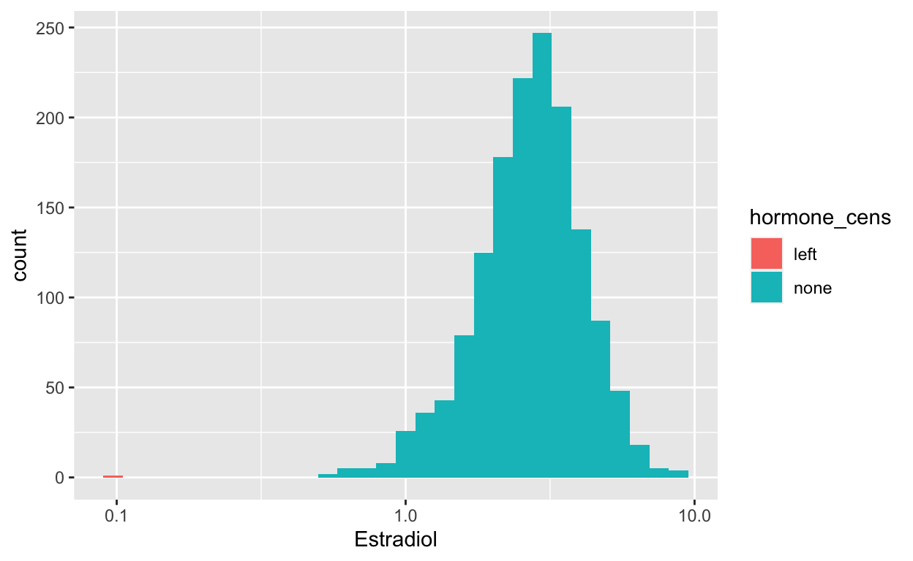
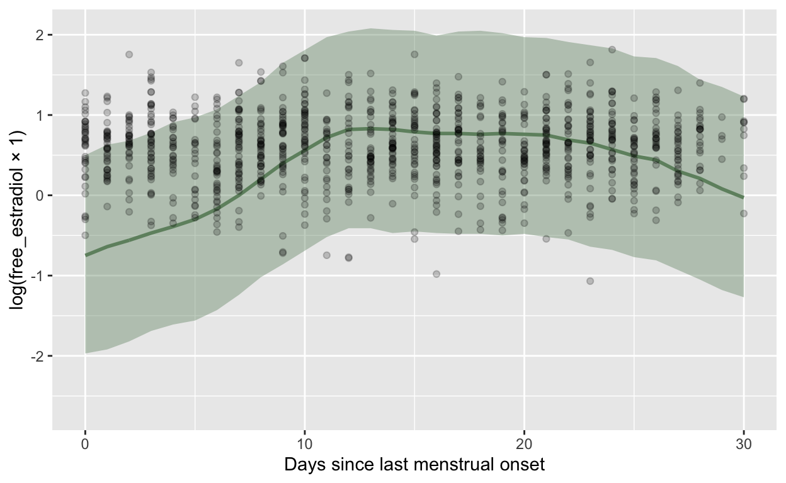

# get hormone data from Jones et al 2018 Psych Sci
# doi: 10.1177/0956797618760197
hormones <- read_csv("data/ocmate/OCMATE_facepref_anon.csv",
col_types = "--cddccDn--cnc--dddd---") %>%
distinct()
# anonymised cycle questionnaire data for only subjects above
cycle <- read_csv("data/ocmate/OCMATE_cycle_anon.csv")
whitespace <- function(x) {
x <- str_trim(x)
x <- str_replace_all(x, "\\s+", " ")
}
notes <- read_csv("data/ocmate/OCMATE hormone notes.csv")
notes <- notes %>% mutate(
e_LOQ = case_when(
whitespace(labnotes) == "The concentration of estradiol is below the lowest calibration standard but above the low limit of sensitivity. Data are acceptable for analysis." ~ T,
whitespace(labnotes) == "Cortisol = 27.62, The concentration of estradiol is below the lowest calibration standard but above the low limit of sensitivity. Data are acceptable for analysis. Low level of saliva. Possible solid particulate present from when the samples were centrifu" ~ T,
whitespace(labnotes) == "The concentration of progesterone & estradiol is below the lowest calibration standard but above the low limit of sensitivity. Data are acceptable for analysis." ~ T,
TRUE ~ F),
p_LOQ = case_when(
whitespace(labnotes) == "The concentration of progesterone is below the lowest calibration standard but above the low limit of sensitivity. Data are acceptable for analysis." ~ T,
whitespace(labnotes) == "The concentration of progesterone & estradiol is below the lowest calibration standard but above the low limit of sensitivity. Data are acceptable for analysis." ~ T,
whitespace(labnotes) == "The concentration of progesterone & cortisol is below the lowest calibration standard but above the low limit of sensitivity. Data are acceptable for analysis." ~ T,
whitespace(labnotes) == "Concentration of progesterone is below the lowest calibration standard but above the low limit of sensitivity. Data are acceptable for analysis." ~ T,
whitespace(labnotes) == "Progesterone concentration below lowest calibration standard but above low limit of sensitivity. Data acceptable for analysis. Cortisol is <.007, concentration is below the low limit of sensitivity for the assay, data may NOT be acceptable for analysis." ~ T,
TRUE ~ F),
p_LOD = case_when(
whitespace(labnotes) == "Progesterone is <5, concentration is below the low limit of sensitivity for the assay, data may NOT be acceptable for analysis" ~ T,
whitespace(labnotes) == "Progesterone is <5, concentration is below the low limit of sensitivity for the assay" ~ T,
TRUE ~ F,
),
e_LOD = case_when(
whitespace(labnotes) == "Estradiol is <0.1, concentration is below the low limit of sensitivity for the assay" ~ T,
TRUE ~ F
)
)
table(notes$e_LOD)
FALSE TRUE
4892 1 table(notes$e_LOQ)
FALSE TRUE
4835 58 table(notes$p_LOD)
FALSE TRUE
4888 5 table(notes$p_LOQ)
FALSE TRUE
4864 29 notes %>% filter(e_LOD | e_LOQ ) %>% select(estradiol, e_LOQ, e_LOD) %>% arrange(estradiol) %>% knitr::kable()
| estradiol | e_LOQ | e_LOD |
|---|---|---|
| 0.1000 | FALSE | TRUE |
| 0.4800 | TRUE | FALSE |
| 0.5046 | TRUE | FALSE |
| 0.5192 | TRUE | FALSE |
| 0.5511 | TRUE | FALSE |
| 0.6000 | TRUE | FALSE |
| 0.6143 | TRUE | FALSE |
| 0.6200 | TRUE | FALSE |
| 0.6360 | TRUE | FALSE |
| 0.6399 | TRUE | FALSE |
| 0.6614 | TRUE | FALSE |
| 0.6700 | TRUE | FALSE |
| 0.6701 | TRUE | FALSE |
| 0.6721 | TRUE | FALSE |
| 0.6800 | TRUE | FALSE |
| 0.6800 | TRUE | FALSE |
| 0.6870 | TRUE | FALSE |
| 0.6964 | TRUE | FALSE |
| 0.7155 | TRUE | FALSE |
| 0.7172 | TRUE | FALSE |
| 0.7252 | TRUE | FALSE |
| 0.7521 | TRUE | FALSE |
| 0.7700 | TRUE | FALSE |
| 0.7852 | TRUE | FALSE |
| 0.8100 | TRUE | FALSE |
| 0.8100 | TRUE | FALSE |
| 0.8171 | TRUE | FALSE |
| 0.8238 | TRUE | FALSE |
| 0.8390 | TRUE | FALSE |
| 0.8522 | TRUE | FALSE |
| 0.8536 | TRUE | FALSE |
| 0.8542 | TRUE | FALSE |
| 0.8545 | TRUE | FALSE |
| 0.8596 | TRUE | FALSE |
| 0.8657 | TRUE | FALSE |
| 0.8800 | TRUE | FALSE |
| 0.8863 | TRUE | FALSE |
| 0.8867 | TRUE | FALSE |
| 0.8901 | TRUE | FALSE |
| 0.8931 | TRUE | FALSE |
| 0.9000 | TRUE | FALSE |
| 0.9066 | TRUE | FALSE |
| 0.9081 | TRUE | FALSE |
| 0.9200 | TRUE | FALSE |
| 0.9200 | TRUE | FALSE |
| 0.9210 | TRUE | FALSE |
| 0.9299 | TRUE | FALSE |
| 0.9300 | TRUE | FALSE |
| 0.9300 | TRUE | FALSE |
| 0.9300 | TRUE | FALSE |
| 0.9388 | TRUE | FALSE |
| 0.9428 | TRUE | FALSE |
| 0.9500 | TRUE | FALSE |
| 0.9551 | TRUE | FALSE |
| 0.9567 | TRUE | FALSE |
| 0.9600 | TRUE | FALSE |
| 0.9885 | TRUE | FALSE |
| 0.9887 | TRUE | FALSE |
| 0.9900 | TRUE | FALSE |
notes %>% filter(p_LOD | p_LOQ) %>% select(progesterone, p_LOQ, p_LOD) %>% arrange(progesterone) %>% knitr::kable()
| progesterone | p_LOQ | p_LOD |
|---|---|---|
| 0.2720 | TRUE | FALSE |
| 2.5239 | TRUE | FALSE |
| 3.1564 | TRUE | FALSE |
| 4.6196 | TRUE | FALSE |
| 5.0000 | FALSE | TRUE |
| 5.0000 | FALSE | TRUE |
| 5.0000 | FALSE | TRUE |
| 5.0000 | FALSE | TRUE |
| 5.0000 | FALSE | TRUE |
| 5.4138 | TRUE | FALSE |
| 5.4178 | TRUE | FALSE |
| 5.6209 | TRUE | FALSE |
| 6.0152 | TRUE | FALSE |
| 6.0890 | TRUE | FALSE |
| 6.2723 | TRUE | FALSE |
| 6.3590 | TRUE | FALSE |
| 6.6911 | TRUE | FALSE |
| 6.8484 | TRUE | FALSE |
| 7.1316 | TRUE | FALSE |
| 7.5143 | TRUE | FALSE |
| 7.7214 | TRUE | FALSE |
| 8.4760 | TRUE | FALSE |
| 8.5687 | TRUE | FALSE |
| 8.8089 | TRUE | FALSE |
| 8.9171 | TRUE | FALSE |
| 9.0151 | TRUE | FALSE |
| 9.1462 | TRUE | FALSE |
| 9.2260 | TRUE | FALSE |
| 9.2300 | TRUE | FALSE |
| 9.3989 | TRUE | FALSE |
| 9.5936 | TRUE | FALSE |
| 9.7803 | TRUE | FALSE |
| 9.8555 | TRUE | FALSE |
| 9.9761 | TRUE | FALSE |
Cortisol = 27.62, The concentration of estradiol is below the lowest calibration standard but above the low limit of sensitivity. Data are acceptable for analysis. Low level of saliva. Possible solid particulate present from when the samples were centrifu
1
Cortisol is <.007, concentration is below the low limit of sensitivity for the assay, data may NOT be acceptable for analysis.
1
Cortisol is >30, concentration is above the high limit of sensitivity, interference likely, diluted 1/10 for Cortisol (values confirmed by salimetrics), data are NOT acceptable for analyses
1
Diluted 1/5 for Cortisol (value shown has been corrected for dilution)
1
Diluted 1/5 for Cortisol (values confirmed by salimetrics, could be used but an outlier). Salimetrics retested Cortisol in sample, new data with 5 dilution factor show >15, original analysis showed >3. Interference likely, data are NOT acceptable for anal
1
Diluted 1/5 for Estradiol (values confirmed by salimetrics, could be used but an outlier)
1
Estradiol is <0.1, concentration is below the low limit of sensitivity for the assay
1
Had to spit twice to get required volume. First spitting was 11:07-11:08. Second was 11:11-11:12. Second start time changed to reflect this additional minute without altering endtime.
1
Had to spit twice to get required volume. First spitting was 11:36-11:45. Second was 11:47-11:51. Second start time changed to reflect this additional time without altering endtime.
1
Had to spit twice to get required volume. First spitting was 14:32-14:33. Second was 14:39-14:44. Second start time changed to reflect this additional minute without altering endtime.
1
Had to spit twice to get required volume. First spitting was 15:14-15:18. Second was 15:22-15:23. Second start time changed to reflect this additional minute without altering endtime.
1
Had to spit twice to get required volume. First spitting was 16:40-16:43. Second was 16:47-17:01. Second start time changed to reflect this additional minute without altering endtime.
1
Low level of saliva for Testosterone only. If the sample was picked up from the bottom of the tube there may have been a layer of solid particulate present from when the samples were centrifuged. If particulate was picked up this could alter the analyte l
1
Low level of saliva. If the sample was picked up from the bottom of the tube there may have been a layer of solid particulate present from when the samples were centrifuged. If particulate was picked up this could alter the analyte level.
1
Low volume of saliva, salimetrics tested Estradiol & Progesterone at 2x dilution. Results have been corrected for this and are okay to use as is.
1
No time recorded on saliva tube. Average time from other sessions used.
1
Odd session numbers are correct, came in week 1 missed week 2 did week 3 then dropped out
1
Only 1 time written on tube, cannot calculate average because she only has 1 session - used rounded precise sec time
1
Progesterone concentration below lowest calibration standard but above low limit of sensitivity. Data acceptable for analysis. Cortisol is <.007, concentration is below the low limit of sensitivity for the assay, data may NOT be acceptable for analysis.
1
Progesterone is <5, concentration is below the low limit of sensitivity for the assay
1
The concentration of cortisol is below the lowest calibration standard but above the low limit of sensitivity. Data are acceptable for analysis.
1
The concentration of progesterone & cortisol is below the lowest calibration standard but above the low limit of sensitivity. Data are acceptable for analysis.
1
Cortisol is >35, concentration is above the high limit of sensitivity, interference likely, diluted 1/10 for Cortisol (values confirmed by salimetrics)
2
Diluted 1/10 for Cortisol (values confirmed by salimetrics, could be used but an outlier)
2
has 2x session 1 samples, on 28/10 she did all behavioral tests and provided a sample, on 30/10 she did the photo and voice recording and provided an additional sample, make sure to match on date in queries
2
No time written on tube, average of other times used and endtime for code questionnaire used as endtime approx
2
Blood contamination, sample unable to be analysed
3
Salimetrics retested Testosterone at normal dilution factor, data okay to use
3
Progesterone is <5, concentration is below the low limit of sensitivity for the assay, data may NOT be acceptable for analysis
4
Concentration of progesterone is below the lowest calibration standard but above the low limit of sensitivity. Data are acceptable for analysis.
5
The concentration of progesterone & estradiol is below the lowest calibration standard but above the low limit of sensitivity. Data are acceptable for analysis.
5
Flow rate calculated using average saliva time (for remaning 4 sessions)
7
Diluted 1/5 for Cortisol (values confirmed by salimetrics, could be used but an outlier)
13
Only 1 time written on tube, average of other times used
16
The concentration of progesterone is below the lowest calibration standard but above the low limit of sensitivity. Data are acceptable for analysis.
17
The concentration of estradiol is below the lowest calibration standard but above the low limit of sensitivity. Data are acceptable for analysis.
52 Hormones
Data is long with each row representing a face trial, so we selected just relevant data and removed duplicate rows.
oc_id: ID of the subjectblock: testing block (1, 2 or 3)age: age (in years) of subject on day of testingethnicity: ethnic group of subject (all white)sexpref: sexual preference of subject (all heterosexual)date: date of testing sessionpill: is subject currently using OCP (0 = no hormonal contraception, 1 = using OCP)partner: does subject currently have a romantic partner? (0 = no partner, 1 = yes partner)block_pill: all unique pill column values in the block (0 if never used OCP, 1 if always used OCP, otherwise mixed: e.g., 1,0)block_partner: all unique partner column values in the block (0 if never had partner, 1 if always had partner, otherwised mixed: e.g., 1,0)progesterone: salivary progesterone for that session, pg/mLestradiol: salivary estradiol for that session, pg/mLtestosterone: salivary testosterone for that session, pg/mLcortisol: salivary cortisol for that session, g/dL (1 ug/dL = 10000 pg/mL)
Saliva samples were frozen immediately and stored at 32 C until being shipped on dry ice to the Salimet- rics Lab (Suffolk, United Kingdom) for analysis, where they were assayed using the Salivary 17-Estradiol Enzyme Immunoassay Kit 1-3702 (M = 3.30 pg/mL, SD = 1.27 pg/mL, sensitivity = 0.1 pg/mL, intra-assay coefficient of variability, or CV = 7.13%, inter-assay CV = 7.45%), Salivary Progesterone Enzyme Immunoassay Kit 1-1502 (M = 148.55 pg/mL, SD = 96.13 pg/mL, sen- sitivity = 5 pg/mL, intra-assay CV = 6.20%, inter-assay CV = 7.55%), Salivary Testosterone Enzyme Immunoas- say Kit 1-2402 (M = 87.66 pg/mL, SD = 27.19 pg/mL, sensitivity < 1.0 pg/mL, intra-assay CV = 4.60%, inter- assay CV = 9.83%), and Salivary Cortisol Enzyme Immu- noassay Kit 1-3002 (M = 0.23 g/dL, SD = 0.16 g/dL, sensitivity < 0.003 g/dL, intra-assay CV = 3.50%, inter- assay CV = 5.08%). Only hormone levels from women not using hormonal contraceptives were used in analy- ses (values given above are for these women only). Hormone levels more than 3 standard deviations from the sample mean for that hormone or where Sali- metrics indicated levels were outside their sensitivity range were excluded from the data set (~1% of hor- mone measures were excluded for these reasons). The descriptive statistics given above do not include these excluded values.
Cycle Questionnaire
oc_id: unique identifier for the subjectdate: date the questionnaire was completedlast_menst: When was the first day of your last period? (If you have stopped menstruating for any reason skip to Question 6)- datemenu: -100y to +0y
next_menst: When do you expect to start your next period?- datemenu: +0y to +1y
regular:How regular is your menstrual cycle?- 0: I dont know
- 1: Very Irregular (e.g.I can never really predict when my period will start)
- 2: Somewhat Irregular (e.g.my cyle is about the same length, but can vary by a few days)
- 3: Regular (e.g.my cycle is the same length every month)
cycle_length: Typically, how long is your menstrual cycle (i.e.how many days are there between the first day of your period and the start of your next period)?- selectnum: 14 to 56
Join data
Join by oc_id and date.
data <- hormones %>%
full_join(cycle, by = c("oc_id", "date"))
FALSE TRUE
3810 178
FALSE TRUE
3810 178
FALSE TRUE
3808 180 Menstrual onsets
menstrual_onsets <- data %>%
group_by(oc_id) %>%
arrange(date) %>%
select(oc_id, date, menstrual_onset_date = last_menst) %>%
filter(!is.na(menstrual_onset_date)) %>%
unique()
menstrual_onsets %>% filter(oc_id=="OC_0119e87d")
# A tibble: 5 3
# Groups: oc_id [1]
oc_id date menstrual_onset_date
<chr> <date> <date>
1 OC_0119e87d 2015-09-22 2015-09-03
2 OC_0119e87d 2015-09-29 2015-09-28
3 OC_0119e87d 2015-10-06 2015-09-28
4 OC_0119e87d 2015-10-13 2015-09-24
5 OC_0119e87d 2015-10-20 2015-10-01 qplot(data$date)
`stat_bin()` using `bins = 30`. Pick better value with `binwidth`.
Attaching package: 'tidylog'The following objects are masked from 'package:dplyr':
add_count, add_tally, anti_join, count, distinct,
distinct_all, distinct_at, distinct_if, filter,
filter_all, filter_at, filter_if, full_join, group_by,
group_by_all, group_by_at, group_by_if, inner_join,
left_join, mutate, mutate_all, mutate_at, mutate_if,
relocate, rename, rename_all, rename_at, rename_if,
rename_with, right_join, sample_frac, sample_n, select,
select_all, select_at, select_if, semi_join, slice,
slice_head, slice_max, slice_min, slice_sample,
slice_tail, summarise, summarise_all, summarise_at,
summarise_if, summarize, summarize_all, summarize_at,
summarize_if, tally, top_frac, top_n, transmute,
transmute_all, transmute_at, transmute_if, ungroupThe following objects are masked from 'package:tidyr':
drop_na, fill, gather, pivot_longer, pivot_wider,
replace_na, spread, uncountThe following object is masked from 'package:stats':
filtermenstrual_onsets <- menstrual_onsets %>%
mutate(menstrual_onset_date = if_else(menstrual_onset_date < as.Date("2012-08-01") |
menstrual_onset_date > as.Date("2016-12-14"), as.Date(NA_real_), menstrual_onset_date))
mutate (grouped): changed 8 values (<1%) of 'menstrual_onset_date' (8 new NA)menstrual_onsets <- menstrual_onsets %>%
mutate(menstrual_onset_date = if_else(menstrual_onset_date > date, as.Date(NA_real_), menstrual_onset_date))
mutate (grouped): no changesmenstrual_onsets <- menstrual_onsets %>%
distinct(oc_id, menstrual_onset_date, .keep_all = TRUE)
distinct (grouped): removed 1,556 rows (41%), 2,278 rows remainingmenstrual_onsets <- menstrual_onsets %>%
group_by(oc_id) %>%
# step 3: prefer reports closer to event if they conflict
mutate(
report_diff = as.numeric(date - menstrual_onset_date, units = "days")
) %>%
filter(report_diff < 50) %>%
mutate(
onset_diff = abs( as.double( lag(menstrual_onset_date) - menstrual_onset_date, units = "days")), # was there a change compared to the last reported menstrual onset (first one gets NA)
menstrual_onset_date = if_else(onset_diff < 7, # if last date is known, but is slightly different from current date
as.Date(NA), # attribute it to memory, not extremely short cycle, use fresher date
menstrual_onset_date, # if it's a big difference, use the current date
menstrual_onset_date # use current date if last date not known/first onset
) # if no date is assigned today, keep it like that
)
group_by: one grouping variable (oc_id)mutate (grouped): new variable 'report_diff' (double) with 74 unique values and <1% NAfilter (grouped): removed 34 rows (1%), 2,244 rows remainingmutate (grouped): changed 574 values (26%) of 'menstrual_onset_date' (574 new NA) new variable 'onset_diff' (double) with 240 unique values and 26% NAmenstrual_onsets %>% filter(oc_id=="OC_0119e87d")
filter (grouped): removed 2,240 rows (>99%), 4 rows remaining# A tibble: 4 5
# Groups: oc_id [1]
oc_id date menstrual_onset_date report_diff onset_diff
<chr> <date> <date> <dbl> <dbl>
1 OC_0119e87d 2015-09-22 2015-09-03 19 NA
2 OC_0119e87d 2015-09-29 2015-09-28 1 25
3 OC_0119e87d 2015-10-13 NA 19 4
4 OC_0119e87d 2015-10-20 2015-10-01 19 7menstrual_onsets_reduced <- menstrual_onsets %>%
filter(!is.na(menstrual_onset_date)) %>%
mutate(date_origin = "questionnaire")
filter (grouped): removed 574 rows (26%), 1,670 rows remainingmutate (grouped): new variable 'date_origin' (character) with one unique value and 0% NA### REPEAT
menstrual_onsets_reduced <- menstrual_onsets_reduced %>%
group_by(oc_id) %>%
# step 3: prefer reports closer to event if they conflict
mutate(
onset_diff = abs( as.double( lag(menstrual_onset_date) - menstrual_onset_date, units = "days")), # was there a change compared to the last reported menstrual onset (first one gets NA)
menstrual_onset_date = if_else(onset_diff < 7, # if last date is known, but is slightly different from current date
as.Date(NA), # attribute it to memory, not extremely short cycle, use fresher date
menstrual_onset_date, # if it's a big difference, use the current date
menstrual_onset_date # use current date if last date not known/first onset
) # if no date is assigned today, keep it like that
)
group_by: one grouping variable (oc_id)mutate (grouped): changed 14 values (1%) of 'menstrual_onset_date' (14 new NA) changed 335 values (20%) of 'onset_diff' (0 new NA)menstrual_onsets_reduced <- menstrual_onsets_reduced %>%
filter(!is.na(menstrual_onset_date)) %>%
mutate(date_origin = "questionnaire")
filter (grouped): removed 14 rows (1%), 1,656 rows remainingmutate (grouped): no changes### REPEAT AGAIN, THIS TIME ORDERED BY ONSET, NOT REPORTED DATE (catch those wildly out of order reports)
menstrual_onsets_reduced <- menstrual_onsets_reduced %>%
group_by(oc_id) %>%
arrange(menstrual_onset_date, date) %>%
# step 3: prefer reports closer to event if they conflict
mutate(
onset_diff = abs( as.double( lag(menstrual_onset_date) - menstrual_onset_date, units = "days")), # was there a change compared to the last reported menstrual onset (first one gets NA)
menstrual_onset_date = if_else(onset_diff < 7, # if last date is known, but is slightly different from current date
as.Date(NA), # attribute it to memory, not extremely short cycle, use fresher date
menstrual_onset_date, # if it's a big difference, use the current date
menstrual_onset_date # use current date if last date not known/first onset
) # if no date is assigned today, keep it like that
) %>%
arrange(date, menstrual_onset_date)
group_by: one grouping variable (oc_id)mutate (grouped): changed 9 values (1%) of 'menstrual_onset_date' (9 new NA) changed 152 values (9%) of 'onset_diff' (0 new NA)menstrual_onsets_reduced <- menstrual_onsets_reduced %>%
filter(!is.na(menstrual_onset_date)) %>%
mutate(date_origin = "questionnaire")
filter (grouped): removed 9 rows (1%), 1,647 rows remainingmutate (grouped): no changesmenstrual_onsets_reduced <- menstrual_onsets_reduced %>%
group_by(oc_id) %>%
mutate(
onset_diff = abs( as.double( lag(menstrual_onset_date) - menstrual_onset_date, units = "days")), # was there a change compared to the last reported menstrual onset (first one gets NA)
menstrual_onset_date = if_else(onset_diff < 7, # if last date is known, but is slightly different from current date
as.Date(NA), # attribute it to memory, not extremely short cycle, use fresher date
menstrual_onset_date, # if it's a big difference, use the current date
menstrual_onset_date # use current date if last date not known/first onset
) # if no date is assigned today, keep it like that
)
group_by: one grouping variable (oc_id)mutate (grouped): changed 133 values (8%) of 'onset_diff' (0 new NA)menstrual_onsets_reduced %>% filter(oc_id=="OC_0119e87d")
filter (grouped): removed 1,645 rows (>99%), 2 rows remaining# A tibble: 2 6
# Groups: oc_id [1]
oc_id date menstrual_onset report_diff onset_diff date_origin
<chr> <date> <date> <dbl> <dbl> <chr>
1 OC_0119e87d 2015-09-22 2015-09-03 19 NA questionna
2 OC_0119e87d 2015-09-29 2015-09-28 1 25 questionnagroup_by: 2 grouping variables (oc_id, date)filter (grouped): removed all rows (100%)# A tibble: 0 6
# Groups: oc_id, date [0]
# with 6 variables: oc_id <chr>, date <date>,
# menstrual_onset_date <date>, report_diff <dbl>, onset_diff <dbl>,
# date_origin <chr>menstrual_onsets_reduced %>% filter(oc_id=="OC_4f0197da")
filter (grouped): removed 1,644 rows (>99%), 3 rows remaining# A tibble: 3 6
# Groups: oc_id [1]
oc_id date menstrual_onset report_diff onset_diff date_origin
<chr> <date> <date> <dbl> <dbl> <chr>
1 OC_4f0197da 2016-01-19 2015-12-27 23 NA questionna
2 OC_4f0197da 2016-01-26 2016-01-24 2 28 questionna
3 OC_4f0197da 2016-02-09 2016-01-16 24 8 questionnamons <- menstrual_onsets_reduced
# now turn our dataset of menstrual onsets into full time series
menstrual_days = data %>%
select(oc_id, date) %>%
distinct(oc_id, date) %>%
arrange(oc_id, date) %>%
full_join(mons %>% mutate(date = menstrual_onset_date), by = c("oc_id", "date")) %>%
mutate(date_origin = if_else(is.na(date_origin), "not_onset", date_origin)) %>%
group_by(oc_id) %>%
complete(date = full_seq(date, period = 1)) %>%
mutate(date_origin = if_else(is.na(date_origin), "unobserved_day", date_origin)) %>%
arrange(date) %>%
distinct(oc_id, date, menstrual_onset_date, .keep_all = TRUE) %>%
arrange(oc_id, date, menstrual_onset_date) %>%
distinct(oc_id, date, .keep_all = TRUE)
select: dropped 16 variables (block, age, ethnicity, sexpref, pill, )distinct: removed 168 rows (4%), 4,052 rows remainingmutate (grouped): changed 1,575 values (96%) of 'date' (0 new NA)full_join: added 4 columns (menstrual_onset_date, report_diff, onset_diff, date_origin) > rows only in x 3,898 > rows only in y 1,493 > matched rows 154 > ======= > rows total 5,545mutate: changed 3,898 values (70%) of 'date_origin' (3898 fewer NA)group_by: one grouping variable (oc_id)mutate (grouped): changed 94,856 values (94%) of 'date_origin' (94856 fewer NA)distinct (grouped): no rows removed
distinct (grouped): no rows removedmenstrual_days %>% filter(oc_id == "OC_5bfa454b")
filter (grouped): removed 100,282 rows (>99%), 119 rows remaining# A tibble: 119 6
# Groups: oc_id [1]
oc_id date menstrual_onset_date report_diff onset_diff
<chr> <date> <date> <dbl> <dbl>
1 OC_5bfa454b 2013-10-01 2013-10-01 43 25
2 OC_5bfa454b 2013-10-02 NA NA NA
3 OC_5bfa454b 2013-10-03 NA NA NA
4 OC_5bfa454b 2013-10-04 NA NA NA
5 OC_5bfa454b 2013-10-05 NA NA NA
6 OC_5bfa454b 2013-10-06 NA NA NA
7 OC_5bfa454b 2013-10-07 NA NA NA
8 OC_5bfa454b 2013-10-08 NA NA NA
9 OC_5bfa454b 2013-10-09 2013-10-09 15 NA
10 OC_5bfa454b 2013-10-10 NA NA NA
# with 109 more rows, and 1 more variable: date_origin <chr>table(menstrual_days$date_origin, exclude=NULL)
not_onset questionnaire unobserved_day
3898 1647 94856 group_by: one grouping variable (oc_id)summarise: now 598 rows and 2 columns, ungrouped`stat_bin()` using `bins = 30`. Pick better value with `binwidth`.menstrual_days %>% group_by(oc_id) %>% summarise(n = n()) %>% filter(n> 1000) %>% left_join(menstrual_days)
group_by: one grouping variable (oc_id)summarise: now 598 rows and 2 columns, ungroupedfilter: removed 587 rows (98%), 11 rows remainingJoining, by = "oc_id"left_join: added 5 columns (date, menstrual_onset_date, report_diff, onset_diff, date_origin) > rows only in x 0 > rows only in y (87,310) > matched rows 13,091 (includes duplicates) > ======== > rows total 13,091# A tibble: 13,091 7
oc_id n date menstrual_onset report_diff onset_diff
<chr> <int> <date> <date> <dbl> <dbl>
1 OC_0bf3ed42 1147 2013-10-24 NA NA NA
2 OC_0bf3ed42 1147 2013-10-25 NA NA NA
3 OC_0bf3ed42 1147 2013-10-26 NA NA NA
4 OC_0bf3ed42 1147 2013-10-27 NA NA NA
5 OC_0bf3ed42 1147 2013-10-28 NA NA NA
6 OC_0bf3ed42 1147 2013-10-29 NA NA NA
7 OC_0bf3ed42 1147 2013-10-30 NA NA NA
8 OC_0bf3ed42 1147 2013-10-31 NA NA NA
9 OC_0bf3ed42 1147 2013-11-01 NA NA NA
10 OC_0bf3ed42 1147 2013-11-02 NA NA NA
# with 13,081 more rows, and 1 more variable: date_origin <chr># menstrual_days %>% group_by(oc_id) %>% summarise(n = n()) %>% filter(n> 1000) %>% left_join(cycle) %>% View
# str(data$last_menst)
menstrual_days %>% drop_na(oc_id, date) %>%
group_by(oc_id, date) %>% filter(n()>1) %>% nrow() %>% { . == 0} %>% stopifnot()
drop_na (grouped): no rows removedgroup_by: 2 grouping variables (oc_id, date)filter (grouped): removed all rows (100%)menstrual_days = menstrual_days %>%
group_by(oc_id) %>%
mutate(
# carry the last observation (the last observed menstrual onset) backward/forward (within person), but we don't do this if we'd bridge more than 40 days this way
# first we carry it backward (because reporting is retrospective)
next_menstrual_onset = rcamisc::repeat_last(menstrual_onset_date, forward = FALSE),
# then we carry it forward
last_menstrual_onset = rcamisc::repeat_last(menstrual_onset_date),
# in the next cycle, count to the next onset, not the last
next_menstrual_onset = if_else(next_menstrual_onset == last_menstrual_onset,
lead(next_menstrual_onset),
next_menstrual_onset),
# calculate the diff to current date
menstrual_onset_days_until = as.numeric(date - next_menstrual_onset),
menstrual_onset_days_since = as.numeric(date - last_menstrual_onset)
)
group_by: one grouping variable (oc_id)mutate (grouped): new variable 'next_menstrual_onset' (Date) with 580 unique values and 17% NA new variable 'last_menstrual_onset' (Date) with 722 unique values and 3% NA new variable 'menstrual_onset_days_until' (double) with 1,086 unique values and 17% NA new variable 'menstrual_onset_days_since' (double) with 1,091 unique values and 3% NAavg_cycle_lengths = menstrual_days %>%
select(oc_id, last_menstrual_onset, next_menstrual_onset) %>%
mutate(next_menstrual_onset_if_no_last = if_else(is.na(last_menstrual_onset), next_menstrual_onset, as.Date(NA_character_))) %>%
arrange(oc_id, next_menstrual_onset_if_no_last, last_menstrual_onset) %>%
select(-next_menstrual_onset) %>%
distinct(oc_id, last_menstrual_onset, next_menstrual_onset_if_no_last, .keep_all = TRUE) %>%
group_by(oc_id) %>%
mutate(
number_of_cycles = n(),
cycle_nr = row_number(),
cycle_length = as.double(lead(last_menstrual_onset) - last_menstrual_onset, units = "days"),
cycle_nr_fully_observed = sum(!is.na(cycle_length)),
mean_cycle_length_diary = mean(cycle_length, na.rm = TRUE),
median_cycle_length_diary = median(cycle_length, na.rm = TRUE)) %>%
filter(!is.na(last_menstrual_onset) | !is.na(next_menstrual_onset_if_no_last))
select: dropped 7 variables (date, menstrual_onset_date, report_diff, onset_diff, date_origin, )mutate (grouped): new variable 'next_menstrual_onset_if_no_last' (Date) with one unique value and 100% NAselect: dropped one variable (next_menstrual_onset)distinct (grouped): removed 98,713 rows (98%), 1,688 rows remaininggroup_by: one grouping variable (oc_id)mutate (grouped): new variable 'number_of_cycles' (integer) with 9 unique values and 0% NA new variable 'cycle_nr' (integer) with 9 unique values and 0% NA new variable 'cycle_length' (double) with 236 unique values and 37% NA new variable 'cycle_nr_fully_observed' (integer) with 9 unique values and 0% NA new variable 'mean_cycle_length_diary' (double) with 238 unique values and 6% NA new variable 'median_cycle_length_diary' (double) with 116 unique values and 6% NAfilter (grouped): removed 41 rows (2%), 1,647 rows remainingtable(avg_cycle_lengths$cycle_length < 7)
FALSE
1060 select: dropped 6 variables (next_menstrual_onset_if_no_last, number_of_cycles, cycle_nr, cycle_nr_fully_observed, mean_cycle_length_diary, )filter (grouped): removed all rows (100%)# A tibble: 0 3
# Groups: oc_id [0]
# with 3 variables: oc_id <chr>, last_menstrual_onset <date>,
# cycle_length <dbl># mons %>% filter(oc_id == "OC_5bfa454b") %>% View
# menstrual_days %>% filter(oc_id == "OC_5bfa454b") %>% View
table(avg_cycle_lengths$cycle_length > 7 & avg_cycle_lengths$cycle_length < 40)
FALSE TRUE
351 709 table(avg_cycle_lengths$cycle_length)
7 8 9 10 11 12 13 14 15 16 17 18 19 20
50 20 4 4 5 8 3 11 8 1 4 12 13 9
21 22 23 24 25 26 27 28 29 30 31 32 33 34
16 21 26 25 40 49 57 106 59 45 30 26 20 26
35 36 37 38 39 40 41 42 43 44 45 46 47 48
21 19 7 6 8 3 6 4 3 4 1 1 4 1
49 50 51 52 53 54 55 56 57 58 59 60 61 62
7 3 4 4 2 2 3 3 3 6 3 3 1 1
63 64 65 66 67 68 69 71 75 76 77 78 80 81
1 2 2 2 1 2 1 1 1 3 2 3 2 3
82 83 85 86 88 89 90 92 93 96 97 102 105 107
2 2 3 1 1 1 1 1 3 1 2 2 2 1
108 109 112 113 117 118 119 122 123 124 128 136 138 140
2 1 3 2 2 1 1 1 1 1 1 1 1 1
143 144 145 146 154 155 158 160 161 163 166 168 169 170
1 1 1 1 1 1 1 1 1 1 1 1 2 1
175 177 179 180 184 185 187 188 190 191 192 193 194 195
5 1 1 2 1 1 1 1 1 2 1 2 1 2
196 197 201 202 203 204 205 207 210 211 212 213 215 216
1 1 1 1 1 1 1 1 1 1 2 2 2 1
217 219 221 223 224 225 226 235 240 243 245 246 249 251
2 1 2 1 3 1 1 1 1 2 1 2 1 1
252 255 257 262 265 267 270 271 272 276 279 287 291 293
2 1 1 1 1 1 1 1 1 2 1 1 1 2
294 300 301 303 304 309 311 314 317 322 327 328 335 336
1 1 1 1 1 1 2 1 1 1 1 1 1 1
339 341 344 345 346 347 355 356 357 359 362 364 368 371
1 1 1 1 1 1 1 1 1 1 1 1 1 1
378 382 386 406 422 425 427 431 436 459 469 484 518 522
1 1 1 1 1 2 1 1 1 1 1 1 1 1
556 589 596 603 611 615 626 634 649 652 661 673 686 693
1 1 1 1 1 1 1 1 1 1 1 1 1 1
695 697 698 701 729 732 734 951 957 1055 1085
2 1 1 1 1 1 1 1 1 1 1 qplot(avg_cycle_lengths$cycle_length) + scale_x_sqrt(breaks = c(7, 28, 50, 100, 200, 500) )
`stat_bin()` using `bins = 30`. Pick better value with `binwidth`.Warning: Removed 587 rows containing non-finite values (stat_bin).avg_cycle_lengths <- avg_cycle_lengths %>% rename(
obs_cycle_length = cycle_length
)
rename: renamed one variable (obs_cycle_length)ocmate <- data %>% left_join(menstrual_days, by = c("oc_id", "date")) %>%
mutate(next_menstrual_onset_if_no_last = if_else(is.na(last_menstrual_onset), next_menstrual_onset, as.Date(NA_character_))) %>%
left_join(avg_cycle_lengths, by = c("oc_id", "last_menstrual_onset", "next_menstrual_onset_if_no_last"))
left_join: added 8 columns (menstrual_onset_date, report_diff, onset_diff, date_origin, next_menstrual_onset, ) > rows only in x 0 > rows only in y (96,349) > matched rows 4,220 > ======== > rows total 4,220mutate: new variable 'next_menstrual_onset_if_no_last' (Date) with one unique value and 100% NAleft_join: added 6 columns (number_of_cycles, cycle_nr, obs_cycle_length, cycle_nr_fully_observed, mean_cycle_length_diary, ) > rows only in x 127 > rows only in y ( 87) > matched rows 4,093 > ======= > rows total 4,220ocmate <- ocmate %>%
mutate(mens_pm_15 = case_when(
menstrual_onset_days_until > -16 ~ menstrual_onset_days_until,
menstrual_onset_days_since < 16 ~
menstrual_onset_days_since,
TRUE ~ NA_real_
))
mutate: new variable 'mens_pm_15' (double) with 32 unique values and 24% NAocmate %>% select(estradiol, progesterone) %>% summarise_all(~ min(., na.rm = T))
select: dropped 32 variables (oc_id, block, age, ethnicity, sexpref, )summarise_all: now one row and 2 columns, ungrouped# A tibble: 1 2
estradiol progesterone
<dbl> <dbl>
1 0.1 0.272ocmate <- ocmate %>%
mutate(
estradiol_cens = if_else(estradiol <= 0.1,
"left", "none"),
estradiol = if_else(estradiol < 0.1,
0.1, estradiol),
progesterone_cens = if_else(progesterone <= 5,
"left", "none"),
progesterone = if_else(progesterone < 5,
5, progesterone)
)
mutate: changed 3 values (<1%) of 'progesterone' (0 new NA) new variable 'estradiol_cens' (character) with 3 unique values and 9% NA new variable 'progesterone_cens' (character) with 3 unique values and 9% NAtable(ocmate$estradiol_cens)
left none
1 3827 table(ocmate$progesterone_cens)
left none
5 3823 ocmate <- ocmate %>% rename(
id = oc_id,
cycle = cycle_nr,
bc_day = menstrual_onset_days_until,
fc_day = menstrual_onset_days_since,
reported_cycle_length = cycle_length,
cycle_length = obs_cycle_length)
rename: renamed 5 variables (id, reported_cycle_length, bc_day, fc_day, cycle)range(ocmate$cycle_length, na.rm = T)
[1] 7 1085range(ocmate$fc_day, na.rm = T)
[1] 0 1089range(ocmate$bc_day, na.rm = T)
[1] -1083 -1# because of OCMATEs unique scheduling with repeated measures across long times, there are many cycles where it's likely that we have missed a menstrual onset
ocmate <- ocmate %>%
mutate(cycle_length =
if_else(cycle_length > 35,
true = 36,
false = cycle_length,
missing = NA_real_),
fc_day =
if_else(fc_day > 34,
true = NA_real_,
false = fc_day,
missing = NA_real_),
bc_day =
if_else(bc_day < -35,
true = NA_real_,
false = bc_day,
missing = NA_real_))
mutate: changed 708 values (17%) of 'bc_day' (708 new NA) changed 230 values (5%) of 'fc_day' (230 new NA) changed 895 values (21%) of 'cycle_length' (0 new NA)range(ocmate$cycle_length, na.rm = T)
[1] 7 36range(ocmate$fc_day, na.rm = T)
[1] 0 34range(ocmate$bc_day, na.rm = T)
[1] -35 -1saveRDS(ocmate, "ocmate.rds")
Hormone plot
ocmate_long <- ocmate %>%
drop_na(pill) %>%
filter(cycle_length > 7, cycle_length < 40,
bc_day > -40) %>%
select(id, pill, mens_pm_15, bc_day, fc_day, estradiol, progesterone, testosterone, cortisol) %>% pivot_longer(cols = c(estradiol, progesterone, testosterone, cortisol))
drop_na: removed 267 rows (6%), 3,953 rows remainingfilter: removed 2,297 rows (58%), 1,656 rows remainingselect: dropped 27 variables (block, age, ethnicity, sexpref, date, )pivot_longer: reorganized (estradiol, progesterone, testosterone, cortisol) into (name, value) [was 1656x9, now 6624x7]ocmate_long %>%
ggplot(aes(bc_day, log(value))) +
geom_point(alpha = 0.1) +
geom_smooth(formula = y ~ s(x), method = "gam") + facet_grid(name ~ pill, scales = "free_y")
Warning: Removed 308 rows containing non-finite values (stat_smooth).Warning: Removed 308 rows containing missing values (geom_point).ocmate_long %>%
ggplot(aes(fc_day, log(value))) +
geom_point(alpha = 0.1) +
geom_smooth(formula = y ~ s(x), method = "gam") + facet_grid(name ~ pill, scales = "free_y")
Warning: Removed 564 rows containing non-finite values (stat_smooth).Warning: Removed 564 rows containing missing values (geom_point).ocmate_long %>%
ggplot(aes(mens_pm_15, log(value))) +
geom_point(alpha = 0.1) +
geom_smooth(formula = y ~ s(x), method = "gam") + facet_grid(name ~ pill, scales = "free_y")
Warning: Removed 608 rows containing non-finite values (stat_smooth).Warning: Removed 608 rows containing missing values (geom_point).mean(ocmate$progesterone, na.rm = T)
[1] 143.632median(ocmate$progesterone, na.rm = T)
[1] 121.385sd(ocmate$progesterone, na.rm = T)
[1] 107.2229mad(ocmate$progesterone, na.rm = T)
[1] 83.24799mean(ocmate$estradiol, na.rm = T)
[1] 3.188828median(ocmate$estradiol, na.rm = T)
[1] 2.9625sd(ocmate$estradiol, na.rm = T)
[1] 1.440205mad(ocmate$estradiol, na.rm = T)
[1] 1.152647filter: removed 1,826 rows (43%), 2,394 rows remainingfilter: removed 1,826 rows (43%), 2,394 rows remaining
filter: removed 1,826 rows (43%), 2,394 rows remaining
filter: removed 1,826 rows (43%), 2,394 rows remainingLinear mixed model fit by REML ['lmerMod']
Formula: estradiol ~ (1 | id)
Data: ocmate %>% filter(pill == 0)
REML criterion at convergence: 7687.182
Random effects:
Groups Name Std.Dev.
id (Intercept) 1.116
Residual 1.108
Number of obs: 2291, groups: id, 376
Fixed Effects:
(Intercept)
3.438 filter: removed 1,826 rows (43%), 2,394 rows remaining
filter: removed 1,826 rows (43%), 2,394 rows remaining
filter: removed 1,826 rows (43%), 2,394 rows remaining
filter: removed 1,826 rows (43%), 2,394 rows remainingLinear mixed model fit by REML ['lmerMod']
Formula: scale(log(estradiol)) ~ (1 | id)
Data: ocmate %>% filter(pill == 0)
REML criterion at convergence: 5453.108
Random effects:
Groups Name Std.Dev.
id (Intercept) 0.7549
Residual 0.6697
Number of obs: 2291, groups: id, 376
Fixed Effects:
(Intercept)
0.05617 filter: removed 2,661 rows (63%), 1,559 rows remainingfilter: removed 2,661 rows (63%), 1,559 rows remaining
filter: removed 2,661 rows (63%), 1,559 rows remaining
filter: removed 2,661 rows (63%), 1,559 rows remainingLinear mixed model fit by REML ['lmerMod']
Formula: scale(log(estradiol)) ~ (1 | id)
Data: ocmate %>% filter(pill == 1)
REML criterion at convergence: 3302.622
Random effects:
Groups Name Std.Dev.
id (Intercept) 0.8127
Residual 0.5977
Number of obs: 1483, groups: id, 264
Fixed Effects:
(Intercept)
0.01313 filter: removed 1,826 rows (43%), 2,394 rows remainingfilter: removed 1,826 rows (43%), 2,394 rows remaining
filter: removed 1,826 rows (43%), 2,394 rows remaining
filter: removed 1,826 rows (43%), 2,394 rows remainingLinear mixed model fit by REML ['lmerMod']
Formula: (log(estradiol)) ~ (1 | id)
Data: ocmate %>% filter(pill == 0)
REML criterion at convergence: 1418.537
Random effects:
Groups Name Std.Dev.
id (Intercept) 0.3128
Residual 0.2775
Number of obs: 2291, groups: id, 376
Fixed Effects:
(Intercept)
1.149 filter: removed 2,661 rows (63%), 1,559 rows remainingfilter: removed 2,661 rows (63%), 1,559 rows remaining
filter: removed 2,661 rows (63%), 1,559 rows remaining
filter: removed 2,661 rows (63%), 1,559 rows remainingLinear mixed model fit by REML ['lmerMod']
Formula: (log(estradiol)) ~ (1 | id)
Data: ocmate %>% filter(pill == 1)
REML criterion at convergence: 825.1994
Random effects:
Groups Name Std.Dev.
id (Intercept) 0.3523
Residual 0.2591
Number of obs: 1483, groups: id, 264
Fixed Effects:
(Intercept)
0.9883 lme4::lmer(progesterone ~ (1|id), ocmate)
Linear mixed model fit by REML ['lmerMod']
Formula: progesterone ~ (1 | id)
Data: ocmate
REML criterion at convergence: 45665.84
Random effects:
Groups Name Std.Dev.
id (Intercept) 68.84
Residual 83.19
Number of obs: 3828, groups: id, 595
Fixed Effects:
(Intercept)
143.3 Linear mixed model fit by REML ['lmerMod']
Formula: log(progesterone) ~ (1 | id)
Data: ocmate
REML criterion at convergence: 7286.302
Random effects:
Groups Name Std.Dev.
id (Intercept) 0.5422
Residual 0.5392
Number of obs: 3828, groups: id, 595
Fixed Effects:
(Intercept)
4.705
Pearson's product-moment correlation
data: log(ocmate$progesterone) and log(ocmate$estradiol)
t = 34.873, df = 3826, p-value < 2.2e-16
alternative hypothesis: true correlation is not equal to 0
95 percent confidence interval:
0.4666971 0.5147868
sample estimates:
cor
0.4911161 Linear mixed model fit by REML ['lmerMod']
Formula: scale(log(estradiol)) ~ scale(log(progesterone)) + (1 | id)
Data: ocmate
REML criterion at convergence: 8104.467
Random effects:
Groups Name Std.Dev.
id (Intercept) 0.6704
Residual 0.5899
Number of obs: 3828, groups: id, 595
Fixed Effects:
(Intercept) scale(log(progesterone))
0.04131 0.39535 Compare pill/non-pill
ocmate %>% group_by(pill, id) %>%
summarise_at(vars(progesterone, estradiol, testosterone, cortisol), mean, na.rm = T) %>%
summarise_at(vars(progesterone, estradiol, testosterone, cortisol), funs(mean, var), na.rm = T) %>%
pivot_longer(-pill) %>%
drop_na() %>%
pivot_wider(names_from = pill) %>%
mutate(diff = `0`-`1`,
ratio = 100*`1`/`0`) %>%
arrange(name)
group_by: 2 grouping variables (pill, id)summarise_at: now 770 rows and 6 columns, one group variable remaining (pill)Warning: `funs()` was deprecated in dplyr 0.8.0.
Please use a list of either functions or lambdas:
# Simple named list:
list(mean = mean, median = median)
# Auto named with `tibble::lst()`:
tibble::lst(mean, median)
# Using lambdas
list(~ mean(., trim = .2), ~ median(., na.rm = TRUE))summarise_at: now 3 rows and 9 columns, ungroupedpivot_longer: reorganized (progesterone_mean, estradiol_mean, testosterone_mean, cortisol_mean, progesterone_var, ) into (name, value) [was 3x9, now 24x3]drop_na: removed 8 rows (33%), 16 rows remainingpivot_wider: reorganized (pill, value) into (0, 1) [was 16x3, now 8x3]mutate: new variable 'diff' (double) with 8 unique values and 0% NA new variable 'ratio' (double) with 8 unique values and 0% NA# A tibble: 8 5
name `0` `1` diff ratio
<chr> <dbl> <dbl> <dbl> <dbl>
1 cortisol_mean 0.259 0.301 -0.0423 116.
2 cortisol_var 0.188 0.0928 0.0952 49.4
3 estradiol_mean 3.45 2.93 0.523 84.9
4 estradiol_var 1.51 1.10 0.403 73.2
5 progesterone_mean 161. 121. 39.7 75.4
6 progesterone_var 7648. 4207. 3441. 55.0
7 testosterone_mean 88.5 61.7 26.8 69.7
8 testosterone_var 601. 361. 240. 60.0# 83.8 vs. 23.1
# diff in pg/ml for total estradiol in serum for Zethraeus et al. 62.4
# ratio: 23.1/83.8=27%
# diff in pg/ml for free testosterone in serum for Zethraeus et al. 2.1
# ratio: 1.8/3.9=46%
# variance ratio e2 in zethraeus 52.3^2/(70.9^2)=54%
# variance ratio free t in zethraeus 1.2^2/1.6^2=56%
ocmate %>% group_by(pill, id) %>%
summarise_at(vars(progesterone, estradiol, testosterone, cortisol), mean, na.rm = T) %>%
pivot_longer(c(-pill, -id)) %>%
drop_na() %>%
ggplot(aes(factor(pill), value)) +
ggbeeswarm::geom_beeswarm() +
geom_pointrange(stat = 'summary', fun.data = 'mean_cl_boot', color = 'blue') +
facet_wrap(~ name, scales = 'free_y')
group_by: 2 grouping variables (pill, id)summarise_at: now 770 rows and 6 columns, one group variable remaining (pill)pivot_longer: reorganized (progesterone, estradiol, testosterone, cortisol) into (name, value) [was 770x6, now 3080x4]drop_na (grouped): removed 520 rows (17%), 2,560 rows remainingocmate %>% group_by(pill, id) %>%
mutate_at(vars(progesterone, estradiol, testosterone, cortisol), log) %>%
summarise_at(vars(progesterone, estradiol, testosterone, cortisol), mean, na.rm = T) %>%
pivot_longer(c(-pill, -id)) %>%
drop_na() %>%
ggplot(aes(factor(pill), value)) +
ggbeeswarm::geom_beeswarm() +
geom_pointrange(stat = 'summary', fun.data = 'mean_cl_boot', color = 'blue') +
facet_wrap(~ name, scales = 'free_y')
group_by: 2 grouping variables (pill, id)mutate_at (grouped): changed 3,828 values (91%) of 'progesterone' (0 new NA) changed 3,828 values (91%) of 'estradiol' (0 new NA) changed 3,828 values (91%) of 'testosterone' (0 new NA) changed 3,826 values (91%) of 'cortisol' (0 new NA)summarise_at: now 770 rows and 6 columns, one group variable remaining (pill)pivot_longer: reorganized (progesterone, estradiol, testosterone, cortisol) into (name, value) [was 770x6, now 3080x4]drop_na (grouped): removed 520 rows (17%), 2,560 rows remainingExport
source("0_summary_functions.R")
Loading required package: RcppLoading 'brms' package (version 2.16.2). Useful instructions
can be found by typing help('brms'). A more detailed introduction
to the package is available through vignette('brms_overview').
Attaching package: 'brms'The following object is masked from 'package:stats':
arexport_anon("ocmate", ocmate)
Warning: Unknown columns: `lh_day`select: dropped 27 variables (block, age, ethnicity, sexpref, date, )ungroup: no grouping variablesmutate: converted 'id' from character to factor (0 new NA)Summarize
df <- ocmate %>% filter(pill == 0) %>% select(id, cycle, bc_day, fc_day, estradiol, progesterone, cycle_length, age, partner)
filter: removed 1,826 rows (43%), 2,394 rows remainingselect: dropped 27 variables (block, ethnicity, sexpref, date, pill, )summarise_hormones(df, "OCMATE Non-HC")
filter: removed 730 rows (30%), 1,664 rows remainingselect: dropped 25 variables (prc_wcx_bc, est_estradiol_bc, est_estradiol_bc_se, est_estradiol_bc_low, est_estradiol_bc_high, )Joining, by = "bc_day"left_join: added one column (prc_stirn_bc) > rows only in x 891 > rows only in y ( 9) > matched rows 773 > ======= > rows total 1,664select: dropped 25 variables (prc_wcx_fc, est_estradiol_fc, est_estradiol_fc_se, est_estradiol_fc_low, est_estradiol_fc_high, )left_join: added one column (prc_stirn_fc) > rows only in x 112 > rows only in y ( 5) > matched rows 1,552 > ======= > rows total 1,664Warning: Unknown or uninitialised column: `lh_day`.left_join: added 22 columns (conception_risk_lh, fertile_lh, est_estradiol_lh, est_estradiol_lh_se, est_estradiol_lh_low, ) > rows only in x 1,664 > rows only in y ( 31) > matched rows 0 > ======= > rows total 1,664group_by: one grouping variable (id)filter (grouped): removed 393 rows (24%), 1,271 rows remaininggroup_by: one grouping variable (id)filter (grouped): removed 36 rows (2%), 1,628 rows remainingWarning: Rows containing NAs were excluded from the model.Warning: Rows containing NAs were excluded from the model.
Warning: Rows containing NAs were excluded from the model.
Warning: Rows containing NAs were excluded from the model.$Dataset
[1] "OCMATE Non-HC"
$Hormone
[1] "Estradiol & Progesterone"
$Method
[1] "Salivary Immunoassay"
$scatterplotWarning: Removed 103 rows containing missing values (geom_point).
$n_women
[1] 384
$n_cycles
[1] 907
$n_days
[1] 2394
$r_ep
[1] " 0.27 [ 0.23; 0.30]"
$r_log_ep
[1] " 0.43 [ 0.40; 0.46]"
$r_e_ratio
[1] " 0.13 [ 0.09; 0.17]"
$r_log_e_ratio
[1] " 0.12 [ 0.08; 0.16]"
$r_p_ratio
[1] "-0.43 [-0.46;-0.39]"
$r_log_p_ratio
[1] "-0.84 [-0.85;-0.83]"
$usable_n
[1] 1664
$r_bc_ratio
[1] " 0.18 [ 0.11; 0.25]"
$r_bc_log_ratio
[1] " 0.30 [ 0.23; 0.36]"
$m_bc_prob_rat
Family: gaussian
Links: mu = identity; sigma = identity
Formula: prc_stirn_bc ~ log(estradiol) + log(ratio)
Data: df (Number of observations: 773)
Draws: 4 chains, each with iter = 1000; warmup = 0; thin = 1;
total post-warmup draws = 4000
Population-Level Effects:
Estimate Est.Error l-95% CI u-95% CI Rhat Bulk_ESS
Intercept 0.48 0.04 0.40 0.56 1.00 3816
logestradiol -0.02 0.02 -0.05 0.01 1.00 4041
logratio 0.08 0.01 0.06 0.10 1.00 3981
Tail_ESS
Intercept 2683
logestradiol 2918
logratio 2715
Family Specific Parameters:
Estimate Est.Error l-95% CI u-95% CI Rhat Bulk_ESS Tail_ESS
sigma 0.18 0.00 0.17 0.18 1.00 3381 2647
Draws were sampled using sample(hmc). For each parameter, Bulk_ESS
and Tail_ESS are effective sample size measures, and Rhat is the potential
scale reduction factor on split chains (at convergence, Rhat = 1).
$r_erat_bc
[1] "0.29 [0.21;0.34]"
$m_bc_prob
Family: gaussian
Links: mu = identity; sigma = identity
Formula: prc_stirn_bc ~ s(log(estradiol), log(progesterone))
Data: df (Number of observations: 773)
Draws: 4 chains, each with iter = 1000; warmup = 0; thin = 1;
total post-warmup draws = 4000
Smooth Terms:
Estimate Est.Error l-95% CI
sds(slogestradiollogprogesterone_1) 0.10 0.07 0.01
u-95% CI Rhat Bulk_ESS Tail_ESS
sds(slogestradiollogprogesterone_1) 0.26 1.00 843 1574
Population-Level Effects:
Estimate Est.Error l-95% CI u-95% CI
Intercept 0.16 0.01 0.15 0.17
slogestradiollogprogesterone_1 -0.28 0.27 -0.89 0.21
slogestradiollogprogesterone_2 -0.70 0.27 -1.12 -0.09
Rhat Bulk_ESS Tail_ESS
Intercept 1.00 6961 3153
slogestradiollogprogesterone_1 1.00 2034 1896
slogestradiollogprogesterone_2 1.00 1518 1579
Family Specific Parameters:
Estimate Est.Error l-95% CI u-95% CI Rhat Bulk_ESS Tail_ESS
sigma 0.18 0.00 0.17 0.18 1.00 5833 2985
Draws were sampled using sample(hmc). For each parameter, Bulk_ESS
and Tail_ESS are effective sample size measures, and Rhat is the potential
scale reduction factor on split chains (at convergence, Rhat = 1).
$r_loo_bc
[1] "0.29 [0.22;0.35]"
$r_fc_ratio
[1] " 0.10 [ 0.05; 0.15]"
$r_fc_log_ratio
[1] " 0.18 [ 0.14; 0.23]"
$m_fc_prob_rat
Family: gaussian
Links: mu = identity; sigma = identity
Formula: prc_stirn_fc ~ log(estradiol) + log(ratio)
Data: df (Number of observations: 1552)
Draws: 4 chains, each with iter = 1000; warmup = 0; thin = 1;
total post-warmup draws = 4000
Population-Level Effects:
Estimate Est.Error l-95% CI u-95% CI Rhat Bulk_ESS
Intercept 0.38 0.03 0.32 0.44 1.00 3709
logestradiol -0.01 0.01 -0.03 0.01 1.00 3528
logratio 0.05 0.01 0.04 0.07 1.00 3999
Tail_ESS
Intercept 2664
logestradiol 2990
logratio 2898
Family Specific Parameters:
Estimate Est.Error l-95% CI u-95% CI Rhat Bulk_ESS Tail_ESS
sigma 0.19 0.00 0.19 0.20 1.00 3569 2452
Draws were sampled using sample(hmc). For each parameter, Bulk_ESS
and Tail_ESS are effective sample size measures, and Rhat is the potential
scale reduction factor on split chains (at convergence, Rhat = 1).
$r_erat_fc
[1] "0.18 [0.12;0.22]"
$m_fc_prob
Family: gaussian
Links: mu = identity; sigma = identity
Formula: prc_stirn_fc ~ s(log(estradiol), log(progesterone))
Data: df (Number of observations: 1552)
Draws: 4 chains, each with iter = 1000; warmup = 0; thin = 1;
total post-warmup draws = 4000
Smooth Terms:
Estimate Est.Error l-95% CI
sds(slogestradiollogprogesterone_1) 0.07 0.04 0.01
u-95% CI Rhat Bulk_ESS Tail_ESS
sds(slogestradiollogprogesterone_1) 0.15 1.00 1438 1269
Population-Level Effects:
Estimate Est.Error l-95% CI u-95% CI
Intercept 0.18 0.01 0.17 0.19
slogestradiollogprogesterone_1 -0.32 0.15 -0.60 -0.01
slogestradiollogprogesterone_2 -0.63 0.22 -1.06 -0.17
Rhat Bulk_ESS Tail_ESS
Intercept 1.00 9654 2380
slogestradiollogprogesterone_1 1.00 3457 2582
slogestradiollogprogesterone_2 1.00 3313 2745
Family Specific Parameters:
Estimate Est.Error l-95% CI u-95% CI Rhat Bulk_ESS Tail_ESS
sigma 0.19 0.00 0.19 0.20 1.00 6388 2892
Draws were sampled using sample(hmc). For each parameter, Bulk_ESS
and Tail_ESS are effective sample size measures, and Rhat is the potential
scale reduction factor on split chains (at convergence, Rhat = 1).
$r_loo_fc
[1] "0.18 [0.12;0.22]"df <- ocmate %>% filter(pill == 1) %>% select(id, cycle, bc_day, fc_day, estradiol, progesterone, cycle_length, age, partner)
filter: removed 2,661 rows (63%), 1,559 rows remainingselect: dropped 27 variables (block, ethnicity, sexpref, date, pill, )summarise_hormones(df = df, Dataset = "OCMATE HC")
filter: removed 415 rows (27%), 1,144 rows remainingselect: dropped 25 variables (prc_wcx_bc, est_estradiol_bc, est_estradiol_bc_se, est_estradiol_bc_low, est_estradiol_bc_high, )Joining, by = "bc_day"left_join: added one column (prc_stirn_bc) > rows only in x 637 > rows only in y ( 12) > matched rows 507 > ======= > rows total 1,144select: dropped 25 variables (prc_wcx_fc, est_estradiol_fc, est_estradiol_fc_se, est_estradiol_fc_low, est_estradiol_fc_high, )left_join: added one column (prc_stirn_fc) > rows only in x 66 > rows only in y ( 5) > matched rows 1,078 > ======= > rows total 1,144Warning: Unknown or uninitialised column: `lh_day`.left_join: added 22 columns (conception_risk_lh, fertile_lh, est_estradiol_lh, est_estradiol_lh_se, est_estradiol_lh_low, ) > rows only in x 1,144 > rows only in y ( 31) > matched rows 0 > ======= > rows total 1,144group_by: one grouping variable (id)filter (grouped): removed 264 rows (23%), 880 rows remaininggroup_by: one grouping variable (id)filter (grouped): removed 25 rows (2%), 1,119 rows remainingWarning: Rows containing NAs were excluded from the model.
Warning: Rows containing NAs were excluded from the model.Warning in sqrt(r2[, "Estimate"]): NaNs producedWarning in sqrt(r2[, "Q2.5"]): NaNs producedWarning in sqrt(r2[, "Estimate"]): NaNs producedWarning in sqrt(r2[, "Q2.5"]): NaNs producedWarning: Rows containing NAs were excluded from the model.
Warning: Rows containing NAs were excluded from the model.Warning in sqrt(r2[, "Q2.5"]): NaNs producedWarning in sqrt(r2[, "Estimate"]): NaNs producedWarning in sqrt(r2[, "Q2.5"]): NaNs produced$Dataset
[1] "OCMATE HC"
$Hormone
[1] "Estradiol & Progesterone"
$Method
[1] "Salivary Immunoassay"
$scatterplotWarning: Removed 76 rows containing missing values (geom_point).
$n_women
[1] 276
$n_cycles
[1] 609
$n_days
[1] 1559
$r_ep
[1] " 0.45 [ 0.41; 0.49]"
$r_log_ep
[1] " 0.55 [ 0.52; 0.59]"
$r_e_ratio
[1] " 0.04 [-0.01; 0.09]"
$r_log_e_ratio
[1] " 0.05 [ 0.00; 0.10]"
$r_p_ratio
[1] "-0.55 [-0.59;-0.52]"
$r_log_p_ratio
[1] "-0.80 [-0.82;-0.79]"
$usable_n
[1] 1144
$r_bc_ratio
[1] " 0.09 [ 0.00; 0.18]"
$r_bc_log_ratio
[1] " 0.08 [-0.01; 0.16]"
$m_bc_prob_rat
Family: gaussian
Links: mu = identity; sigma = identity
Formula: prc_stirn_bc ~ log(estradiol) + log(ratio)
Data: df (Number of observations: 507)
Draws: 4 chains, each with iter = 1000; warmup = 0; thin = 1;
total post-warmup draws = 4000
Population-Level Effects:
Estimate Est.Error l-95% CI u-95% CI Rhat Bulk_ESS
Intercept 0.24 0.05 0.14 0.34 1.00 3513
logestradiol -0.01 0.02 -0.04 0.03 1.00 3274
logratio 0.02 0.01 -0.00 0.05 1.00 3637
Tail_ESS
Intercept 2543
logestradiol 2581
logratio 2526
Family Specific Parameters:
Estimate Est.Error l-95% CI u-95% CI Rhat Bulk_ESS Tail_ESS
sigma 0.18 0.01 0.17 0.20 1.00 3423 2763
Draws were sampled using sample(hmc). For each parameter, Bulk_ESS
and Tail_ESS are effective sample size measures, and Rhat is the potential
scale reduction factor on split chains (at convergence, Rhat = 1).
$r_erat_bc
[1] "NaN [NaN;0.10]"
$m_bc_prob
Family: gaussian
Links: mu = identity; sigma = identity
Formula: prc_stirn_bc ~ s(log(estradiol), log(progesterone))
Data: df (Number of observations: 507)
Draws: 4 chains, each with iter = 1000; warmup = 0; thin = 1;
total post-warmup draws = 4000
Smooth Terms:
Estimate Est.Error l-95% CI
sds(slogestradiollogprogesterone_1) 0.07 0.06 0.00
u-95% CI Rhat Bulk_ESS Tail_ESS
sds(slogestradiollogprogesterone_1) 0.23 1.00 1121 1709
Population-Level Effects:
Estimate Est.Error l-95% CI u-95% CI
Intercept 0.16 0.01 0.15 0.18
slogestradiollogprogesterone_1 -0.24 0.19 -0.68 0.10
slogestradiollogprogesterone_2 0.16 0.24 -0.32 0.68
Rhat Bulk_ESS Tail_ESS
Intercept 1.00 6600 2929
slogestradiollogprogesterone_1 1.00 2136 1989
slogestradiollogprogesterone_2 1.00 2395 2129
Family Specific Parameters:
Estimate Est.Error l-95% CI u-95% CI Rhat Bulk_ESS Tail_ESS
sigma 0.18 0.01 0.17 0.20 1.00 5802 3078
Draws were sampled using sample(hmc). For each parameter, Bulk_ESS
and Tail_ESS are effective sample size measures, and Rhat is the potential
scale reduction factor on split chains (at convergence, Rhat = 1).
$r_loo_bc
[1] "NaN [NaN;0.09]"
$r_fc_ratio
[1] " 0.07 [ 0.01; 0.13]"
$r_fc_log_ratio
[1] " 0.07 [ 0.01; 0.13]"
$m_fc_prob_rat
Family: gaussian
Links: mu = identity; sigma = identity
Formula: prc_stirn_fc ~ log(estradiol) + log(ratio)
Data: df (Number of observations: 1078)
Draws: 4 chains, each with iter = 1000; warmup = 0; thin = 1;
total post-warmup draws = 4000
Population-Level Effects:
Estimate Est.Error l-95% CI u-95% CI Rhat Bulk_ESS
Intercept 0.24 0.04 0.17 0.32 1.00 3681
logestradiol 0.01 0.01 -0.01 0.04 1.00 3925
logratio 0.02 0.01 0.00 0.04 1.00 3912
Tail_ESS
Intercept 2821
logestradiol 2608
logratio 2713
Family Specific Parameters:
Estimate Est.Error l-95% CI u-95% CI Rhat Bulk_ESS Tail_ESS
sigma 0.19 0.00 0.18 0.20 1.00 3611 2481
Draws were sampled using sample(hmc). For each parameter, Bulk_ESS
and Tail_ESS are effective sample size measures, and Rhat is the potential
scale reduction factor on split chains (at convergence, Rhat = 1).
$r_erat_fc
[1] "0.04 [NaN;0.10]"
$m_fc_prob
Family: gaussian
Links: mu = identity; sigma = identity
Formula: prc_stirn_fc ~ s(log(estradiol), log(progesterone))
Data: df (Number of observations: 1078)
Draws: 4 chains, each with iter = 1000; warmup = 0; thin = 1;
total post-warmup draws = 4000
Smooth Terms:
Estimate Est.Error l-95% CI
sds(slogestradiollogprogesterone_1) 0.06 0.05 0.00
u-95% CI Rhat Bulk_ESS Tail_ESS
sds(slogestradiollogprogesterone_1) 0.18 1.00 1121 1865
Population-Level Effects:
Estimate Est.Error l-95% CI u-95% CI
Intercept 0.18 0.01 0.16 0.19
slogestradiollogprogesterone_1 -0.25 0.23 -0.71 0.20
slogestradiollogprogesterone_2 -0.30 0.17 -0.67 0.01
Rhat Bulk_ESS Tail_ESS
Intercept 1.00 5603 2577
slogestradiollogprogesterone_1 1.00 1920 1787
slogestradiollogprogesterone_2 1.00 2153 1503
Family Specific Parameters:
Estimate Est.Error l-95% CI u-95% CI Rhat Bulk_ESS Tail_ESS
sigma 0.19 0.00 0.18 0.20 1.00 4694 2289
Draws were sampled using sample(hmc). For each parameter, Bulk_ESS
and Tail_ESS are effective sample size measures, and Rhat is the potential
scale reduction factor on split chains (at convergence, Rhat = 1).
$r_loo_fc
[1] "NaN [NaN;0.10]"df <- ocmate %>% filter(pill == 0) %>% select(id, cycle, bc_day, fc_day, cycle_length, age, partner, hormone = estradiol, hormone_cens = estradiol_cens)
filter: removed 1,826 rows (43%), 2,394 rows remainingselect: renamed 2 variables (hormone, hormone_cens) and dropped 27 variablessummarise_hormone(df, "OCMATE Non-HC", "Estradiol",
Method = "Salivary immunoassay (Salimetrics)",
Citation = "Jones, B. C., Hahn, A. C., Fisher, C. I., Wang, H., Kandrik, M., Han, C., Fasolt, V., Morrison, D., Lee, A. J., Holzleitner, I. J., OShea, K. J., Roberts, S. C., Little, A. C., & DeBruine, L. M. (2018). No Compelling Evidence that Preferences for Facial Masculinity Track Changes in Womens Hormonal Status. Psychological Science, 29(6), 9961005. https://doi.org/10.1177/0956797618760197",
LOD = 0.1,
LOQ = 1,
CV_intra = 7.13,
CV_inter = 7.45,
Procedure = "Participants provided a saliva sample via passive drool (Papacosta & Nassis, 2011) in each test session. Partici- pants were instructed to avoid consuming alcohol and coffee in the 12 hr prior to participation and avoid eating, smoking, drinking, chewing gum, or brushing their teeth in the 60 min prior to participation. Each womans test sessions took place at approximately the same time of day to minimize effects of diurnal changes in hormone levels (Bao et al., 2003; Veldhuis et al., 1988).
Saliva samples were frozen immediately and stored at 32 C until being shipped on dry ice to the Salimet- rics Lab (Suffolk, United Kingdom) for analysis, where they were assayed using the Salivary 17-Estradiol Enzyme Immunoassay Kit 1-3702 (M = 3.30 pg/mL, SD = 1.27 pg/mL, sensitivity = 0.1 pg/mL, intra-assay coefficient of variability, or CV = 7.13%, inter-assay CV = 7.45%).",
Scheduling = "Irrespective of cycle. 'Participants completed up to three blocks of test sessions (mean time between Block 1 and Block 2 = 230 days; mean time between Block 2 and Block 3 = 487 days). Each of the three blocks of test sessions consisted of five weekly test sessions. Table 1 shows how many women completed one, two, three, four, or five test sessions in Blocks 1 through 3.'",
LH_test = "")
select: dropped 7 variables (bc_day, fc_day, age, partner, hormone, )group_by: 2 grouping variables (id, cycle)summarise: now 907 rows and 3 columns, one group variable remaining (id)ungroup: no grouping variablesselect: dropped 8 variables (cycle, bc_day, fc_day, cycle_length, partner, )group_by: one grouping variable (id)summarise: now 384 rows and 2 columns, ungroupedselect: dropped 7 variables (cycle, bc_day, fc_day, cycle_length, hormone, )group_by: one grouping variable (id)summarise: now 384 rows and 2 columns, ungroupedfilter: removed 730 rows (30%), 1,664 rows remaininggroup_by: 2 grouping variables (id, cycle)mutate (grouped): new variable 'hormone_diff' (double) with 1,428 unique values and 0% NA new variable 'log_hormone_diff' (double) with 1,433 unique values and 0% NAungroup: no grouping variablesJoining, by = "bc_day"left_join: added 26 columns (prc_stirn_bc, prc_wcx_bc, est_estradiol_bc, est_estradiol_bc_se, est_estradiol_bc_low, ) > rows only in x 891 > rows only in y ( 9) > matched rows 773 > ======= > rows total 1,664left_join: added 26 columns (prc_stirn_fc, prc_wcx_fc, est_estradiol_fc, est_estradiol_fc_se, est_estradiol_fc_low, ) > rows only in x 112 > rows only in y ( 5) > matched rows 1,552 > ======= > rows total 1,664Warning: Unknown or uninitialised column: `lh_day`.left_join: added 22 columns (conception_risk_lh, fertile_lh, est_estradiol_lh, est_estradiol_lh_se, est_estradiol_lh_low, ) > rows only in x 1,664 > rows only in y ( 31) > matched rows 0 > ======= > rows total 1,664group_by: one grouping variable (id)filter (grouped): removed 393 rows (24%), 1,271 rows remaininggroup_by: one grouping variable (id)filter (grouped): removed 36 rows (2%), 1,628 rows remainingWarning: Rows containing NAs were excluded from the model.Warning: Results may not be meaningful for censored models.
Warning: Results may not be meaningful for censored models.Warning: Rows containing NAs were excluded from the model.
Warning: Rows containing NAs were excluded from the model.Warning: Results may not be meaningful for censored models.Warning in sqrt(r2[, "Estimate"]): NaNs producedWarning in sqrt(r2[, "Q2.5"]): NaNs producedWarning in sqrt(r2[, "Q97.5"]): NaNs producedWarning: Results may not be meaningful for censored models.Warning in sqrt(r2[, "Estimate"]): NaNs producedWarning in sqrt(r2[, "Q2.5"]): NaNs producedWarning in sqrt(r2[, "Q97.5"]): NaNs produced$Dataset
[1] "OCMATE Non-HC"
$Citation
[1] "Jones, B. C., Hahn, A. C., Fisher, C. I., Wang, H., Kandrik, M., Han, C., Fasolt, V., Morrison, D., Lee, A. J., Holzleitner, I. J., OShea, K. J., Roberts, S. C., Little, A. C., & DeBruine, L. M. (2018). No Compelling Evidence that Preferences for Facial Masculinity Track Changes in Womens Hormonal Status. Psychological Science, 29(6), 9961005. https://doi.org/10.1177/0956797618760197"
$Hormone
[1] "Estradiol"
$Method
[1] "Salivary immunoassay (Salimetrics)"
$`Limit of detection`
[1] 0.1
$LOQ
[1] 1
$`Intraassay CV`
[1] 7.13
$`Interassay CV`
[1] 7.45
$Procedure
[1] "Participants provided a saliva sample via passive drool (Papacosta & Nassis, 2011) in each test session. Partici- pants were instructed to avoid consuming alcohol and coffee in the 12 hr prior to participation and avoid eating, smoking, drinking, chewing gum, or brushing their teeth in the 60 min prior to participation. Each womans test sessions took place at approximately the same time of day to minimize effects of diurnal changes in hormone levels (Bao et al., 2003; Veldhuis et al., 1988).\nSaliva samples were frozen immediately and stored at 32 C until being shipped on dry ice to the Salimet- rics Lab (Suffolk, United Kingdom) for analysis, where they were assayed using the Salivary 17-Estradiol Enzyme Immunoassay Kit 1-3702 (M = 3.30 pg/mL, SD = 1.27 pg/mL, sensitivity = 0.1 pg/mL, intra-assay coefficient of variability, or CV = 7.13%, inter-assay CV = 7.45%)."
$Scheduling
[1] "Irrespective of cycle. 'Participants completed up to three blocks of test sessions (mean time between Block 1 and Block 2 = 230 days; mean time between Block 2 and Block 3 = 487 days). Each of the three blocks of test sessions consisted of five weekly test sessions. Table 1 shows how many women completed one, two, three, four, or five test sessions in Blocks 1 through 3.'"
$LH_test
[1] ""
$distribution`stat_bin()` using `bins = 30`. Pick better value with `binwidth`.Warning: Removed 103 rows containing non-finite values (stat_bin).
$mean
[1] 3.362256
$logmean
[1] 1.126175
$logsd
[1] 0.4144053
$median
[1] 3.1117
$sd
[1] 1.550295
$mad
[1] 1.232782
$range
[1] "0.48, 24.22"
$missing
[1] 103
$outliers
[1] 9
$censored
[1] 0
$n_women
[1] 384
$n_cycles
[1] 907
$n_days
[1] 2394
$age
[1] "21.53.29"
$in_relationship
[1] "36%"
$cycle_length
[1] "29.76.73"
$usable_n
[1] 1664
$usable_n_women
[1] 360
$no_lh_surge_woman
[1] "NA"
$no_lh_surge_cycle
[1] "NA"
$var_id_loo
[1] "0.47 [0.43;0.51]"
$var_cycle_loo
[1] "0.51 [0.47;0.54]"
$var_id
[1] "0.30 [0.27;0.33] (50%)"
$var_cycle
[1] "0.14 [0.11;0.17] (12%)"
$var_resid
[1] "0.26 [0.25;0.27] (38%)"
$bc_day_model
Family: gaussian
Links: mu = identity; sigma = identity
Formula: log(hormone) | cens(hormone_cens) ~ s(bc_day) + (1 | id) + (1 | id:cycle)
Data: df (Number of observations: 773)
Draws: 4 chains, each with iter = 1000; warmup = 0; thin = 1;
total post-warmup draws = 4000
Smooth Terms:
Estimate Est.Error l-95% CI u-95% CI Rhat Bulk_ESS
sds(sbc_day_1) 0.31 0.22 0.06 0.90 1.00 1723
Tail_ESS
sds(sbc_day_1) 2212
Group-Level Effects:
~id (Number of levels: 255)
Estimate Est.Error l-95% CI u-95% CI Rhat Bulk_ESS
sd(Intercept) 0.24 0.04 0.14 0.31 1.01 344
Tail_ESS
sd(Intercept) 480
~id:cycle (Number of levels: 312)
Estimate Est.Error l-95% CI u-95% CI Rhat Bulk_ESS
sd(Intercept) 0.23 0.03 0.17 0.30 1.01 308
Tail_ESS
sd(Intercept) 413
Population-Level Effects:
Estimate Est.Error l-95% CI u-95% CI Rhat Bulk_ESS Tail_ESS
Intercept 1.13 0.02 1.09 1.17 1.00 4049 3056
sbc_day_1 -0.19 0.63 -1.66 0.83 1.00 2652 2148
Family Specific Parameters:
Estimate Est.Error l-95% CI u-95% CI Rhat Bulk_ESS Tail_ESS
sigma 0.25 0.01 0.23 0.26 1.00 2336 2999
Draws were sampled using sample(hmc). For each parameter, Bulk_ESS
and Tail_ESS are effective sample size measures, and Rhat is the potential
scale reduction factor on split chains (at convergence, Rhat = 1).
$r_bc
[1] "0.13 [0.08;0.17]"
$rmse_bc
[1] "0.48 [0.46;0.50]"
$r_loo_bc
[1] "NaN [NaN;NaN]"
$r_bc_stirn
[1] "-0.01 [-0.08; 0.06]"
$r_log_bc_stirn
[1] "-0.00 [-0.08; 0.07]"
$r_diff_bc_stirn
[1] "-0.04 [-0.11; 0.03]"
$r_log_diff_bc_stirn
[1] "-0.04 [-0.11; 0.03]"
$r_bc_imputed
[1] " 0.08 [ 0.01; 0.15]"
$r_diff_bc_imputed
[1] " 0.18 [ 0.11; 0.25]"
$sd_bc_imputed
[1] "0.51 (64%)"
$r_diff_bc_imputed_rr
[1] " 0.22 [ 0.14; 0.30]"
$imputed_bc_vs_measured_graphWarning: Removed 892 rows containing missing values (geom_smooth).Warning: Removed 892 rows containing missing values (geom_point).
$rmse_bc_imputed
[1] " 0.64"
$fc_day_model
Family: gaussian
Links: mu = identity; sigma = identity
Formula: log(hormone) | cens(hormone_cens) ~ s(fc_day) + (1 | id) + (1 | id:cycle)
Data: df (Number of observations: 1552)
Draws: 4 chains, each with iter = 1000; warmup = 0; thin = 1;
total post-warmup draws = 4000
Smooth Terms:
Estimate Est.Error l-95% CI u-95% CI Rhat Bulk_ESS
sds(sfc_day_1) 0.40 0.22 0.12 0.97 1.00 1361
Tail_ESS
sds(sfc_day_1) 2066
Group-Level Effects:
~id (Number of levels: 349)
Estimate Est.Error l-95% CI u-95% CI Rhat Bulk_ESS
sd(Intercept) 0.30 0.02 0.27 0.34 1.00 1369
Tail_ESS
sd(Intercept) 2412
~id:cycle (Number of levels: 618)
Estimate Est.Error l-95% CI u-95% CI Rhat Bulk_ESS
sd(Intercept) 0.14 0.01 0.11 0.17 1.00 687
Tail_ESS
sd(Intercept) 1768
Population-Level Effects:
Estimate Est.Error l-95% CI u-95% CI Rhat Bulk_ESS Tail_ESS
Intercept 1.14 0.02 1.10 1.17 1.00 1782 2614
sfc_day_1 0.08 0.58 -1.07 1.27 1.00 3211 2587
Family Specific Parameters:
Estimate Est.Error l-95% CI u-95% CI Rhat Bulk_ESS Tail_ESS
sigma 0.25 0.01 0.24 0.26 1.00 2189 2823
Draws were sampled using sample(hmc). For each parameter, Bulk_ESS
and Tail_ESS are effective sample size measures, and Rhat is the potential
scale reduction factor on split chains (at convergence, Rhat = 1).
$r_fc
[1] "0.12 [0.09;0.16]"
$rmse_fc
[1] "0.48 [0.47;0.49]"
$r_loo_fc
[1] "NaN [NaN;NaN]"
$r_fc_stirn
[1] "-0.00 [-0.05; 0.05]"
$r_log_fc_stirn
[1] "-0.00 [-0.05; 0.05]"
$r_diff_fc_stirn
[1] "-0.01 [-0.06; 0.04]"
$r_log_diff_fc_stirn
[1] "-0.02 [-0.07; 0.03]"
$r_fc_imputed
[1] " 0.07 [ 0.02; 0.12]"
$r_diff_fc_imputed
[1] " 0.15 [ 0.10; 0.19]"
$sd_fc_imputed
[1] "0.52 (101%)"
$r_diff_fc_imputed_rr
[1] " 0.15 [ 0.10; 0.19]"
$imputed_fc_vs_measured_graphWarning: Removed 150 rows containing missing values (geom_smooth).Warning: Removed 150 rows containing missing values (geom_point).
$rmse_fc_imputed
[1] " 0.69"df <- ocmate %>% filter(pill == 0) %>% select(id, cycle, bc_day, fc_day, cycle_length, age, partner, hormone = progesterone, hormone_cens = progesterone_cens)
filter: removed 1,826 rows (43%), 2,394 rows remainingselect: renamed 2 variables (hormone, hormone_cens) and dropped 27 variablessummarise_hormone(df = df, Dataset = "OCMATE Non-HC",
Hormone = "Progesterone",
Method = "Salivary immunoassay (Salimetrics)",
Citation = "Jones, B. C., Hahn, A. C., Fisher, C. I., Wang, H., Kandrik, M., Han, C., Fasolt, V., Morrison, D., Lee, A. J., Holzleitner, I. J., OShea, K. J., Roberts, S. C., Little, A. C., & DeBruine, L. M. (2018). No Compelling Evidence that Preferences for Facial Masculinity Track Changes in Womens Hormonal Status. Psychological Science, 29(6), 9961005. https://doi.org/10.1177/0956797618760197",
LOD = 5,
LOQ = 10,
CV_intra = 6.20,
CV_inter = 7.55,
Procedure = "Participants provided a saliva sample via passive drool (Papacosta & Nassis, 2011) in each test session. Partici- pants were instructed to avoid consuming alcohol and coffee in the 12 hr prior to participation and avoid eating, smoking, drinking, chewing gum, or brushing their teeth in the 60 min prior to participation. Each womans test sessions took place at approximately the same time of day to minimize effects of diurnal changes in hormone levels (Bao et al., 2003; Veldhuis et al., 1988).
Saliva samples were frozen immediately and stored at 32 C until being shipped on dry ice to the Salimet- rics Lab (Suffolk, United Kingdom) for analysis, where they were assayed using the Salivary Progesterone Enzyme Immunoassay Kit 1-1502 (M = 148.55 pg/mL, SD = 96.13 pg/mL, sen- sitivity = 5 pg/mL, intra-assay CV = 6.20%, inter-assay CV = 7.55%).",
Scheduling = "Irrespective of cycle. 'Participants completed up to three blocks of test sessions (mean time between Block 1 and Block 2 = 230 days; mean time between Block 2 and Block 3 = 487 days). Each of the three blocks of test sessions consisted of five weekly test sessions. Table 1 shows how many women completed one, two, three, four, or five test sessions in Blocks 1 through 3.'",
LH_test = "")
select: dropped 7 variables (bc_day, fc_day, age, partner, hormone, )group_by: 2 grouping variables (id, cycle)summarise: now 907 rows and 3 columns, one group variable remaining (id)ungroup: no grouping variablesselect: dropped 8 variables (cycle, bc_day, fc_day, cycle_length, partner, )group_by: one grouping variable (id)summarise: now 384 rows and 2 columns, ungroupedselect: dropped 7 variables (cycle, bc_day, fc_day, cycle_length, hormone, )group_by: one grouping variable (id)summarise: now 384 rows and 2 columns, ungroupedfilter: removed 730 rows (30%), 1,664 rows remaininggroup_by: 2 grouping variables (id, cycle)mutate (grouped): new variable 'hormone_diff' (double) with 1,434 unique values and 0% NA new variable 'log_hormone_diff' (double) with 1,435 unique values and 0% NAungroup: no grouping variablesJoining, by = "bc_day"left_join: added 26 columns (prc_stirn_bc, prc_wcx_bc, est_estradiol_bc, est_estradiol_bc_se, est_estradiol_bc_low, ) > rows only in x 891 > rows only in y ( 9) > matched rows 773 > ======= > rows total 1,664left_join: added 26 columns (prc_stirn_fc, prc_wcx_fc, est_estradiol_fc, est_estradiol_fc_se, est_estradiol_fc_low, ) > rows only in x 112 > rows only in y ( 5) > matched rows 1,552 > ======= > rows total 1,664Warning: Unknown or uninitialised column: `lh_day`.left_join: added 22 columns (conception_risk_lh, fertile_lh, est_estradiol_lh, est_estradiol_lh_se, est_estradiol_lh_low, ) > rows only in x 1,664 > rows only in y ( 31) > matched rows 0 > ======= > rows total 1,664group_by: one grouping variable (id)filter (grouped): removed 393 rows (24%), 1,271 rows remaininggroup_by: one grouping variable (id)filter (grouped): removed 36 rows (2%), 1,628 rows remainingWarning: Rows containing NAs were excluded from the model.Warning: Results may not be meaningful for censored models.
Warning: Results may not be meaningful for censored models.Warning: Rows containing NAs were excluded from the model.
Warning: Rows containing NAs were excluded from the model.Warning: Results may not be meaningful for censored models.
Warning: Results may not be meaningful for censored models.$Dataset
[1] "OCMATE Non-HC"
$Citation
[1] "Jones, B. C., Hahn, A. C., Fisher, C. I., Wang, H., Kandrik, M., Han, C., Fasolt, V., Morrison, D., Lee, A. J., Holzleitner, I. J., OShea, K. J., Roberts, S. C., Little, A. C., & DeBruine, L. M. (2018). No Compelling Evidence that Preferences for Facial Masculinity Track Changes in Womens Hormonal Status. Psychological Science, 29(6), 9961005. https://doi.org/10.1177/0956797618760197"
$Hormone
[1] "Progesterone"
$Method
[1] "Salivary immunoassay (Salimetrics)"
$`Limit of detection`
[1] 5
$LOQ
[1] 10
$`Intraassay CV`
[1] 6.2
$`Interassay CV`
[1] 7.55
$Procedure
[1] "Participants provided a saliva sample via passive drool (Papacosta & Nassis, 2011) in each test session. Partici- pants were instructed to avoid consuming alcohol and coffee in the 12 hr prior to participation and avoid eating, smoking, drinking, chewing gum, or brushing their teeth in the 60 min prior to participation. Each womans test sessions took place at approximately the same time of day to minimize effects of diurnal changes in hormone levels (Bao et al., 2003; Veldhuis et al., 1988).\nSaliva samples were frozen immediately and stored at 32 C until being shipped on dry ice to the Salimet- rics Lab (Suffolk, United Kingdom) for analysis, where they were assayed using the Salivary Progesterone Enzyme Immunoassay Kit 1-1502 (M = 148.55 pg/mL, SD = 96.13 pg/mL, sen- sitivity = 5 pg/mL, intra-assay CV = 6.20%, inter-assay CV = 7.55%)."
$Scheduling
[1] "Irrespective of cycle. 'Participants completed up to three blocks of test sessions (mean time between Block 1 and Block 2 = 230 days; mean time between Block 2 and Block 3 = 487 days). Each of the three blocks of test sessions consisted of five weekly test sessions. Table 1 shows how many women completed one, two, three, four, or five test sessions in Blocks 1 through 3.'"
$LH_test
[1] ""
$distribution`stat_bin()` using `bins = 30`. Pick better value with `binwidth`.Warning: Removed 103 rows containing non-finite values (stat_bin).
$mean
[1] 158.5442
$logmean
[1] 4.805426
$logsd
[1] 0.7620218
$median
[1] 130.17
$sd
[1] 121.3147
$mad
[1] 90.32296
$range
[1] "5.00, 1859.40"
$missing
[1] 103
$outliers
[1] 1
$censored
[1] 4
$n_women
[1] 384
$n_cycles
[1] 907
$n_days
[1] 2394
$age
[1] "21.53.29"
$in_relationship
[1] "36%"
$cycle_length
[1] "29.76.73"
$usable_n
[1] 1664
$usable_n_women
[1] 360
$no_lh_surge_woman
[1] "NA"
$no_lh_surge_cycle
[1] "NA"
$var_id_loo
[1] "0.32 [0.28;0.36]"
$var_cycle_loo
[1] "0.32 [0.28;0.36]"
$var_id
[1] "0.49 [0.43;0.55] (39%)"
$var_cycle
[1] "0.18 [0.04;0.27] (6%)"
$var_resid
[1] "0.58 [0.56;0.61] (55%)"
$bc_day_model
Family: gaussian
Links: mu = identity; sigma = identity
Formula: log(hormone) | cens(hormone_cens) ~ s(bc_day) + (1 | id) + (1 | id:cycle)
Data: df (Number of observations: 773)
Draws: 4 chains, each with iter = 1000; warmup = 0; thin = 1;
total post-warmup draws = 4000
Smooth Terms:
Estimate Est.Error l-95% CI u-95% CI Rhat Bulk_ESS
sds(sbc_day_1) 1.89 0.64 1.00 3.46 1.00 1676
Tail_ESS
sds(sbc_day_1) 2172
Group-Level Effects:
~id (Number of levels: 255)
Estimate Est.Error l-95% CI u-95% CI Rhat Bulk_ESS
sd(Intercept) 0.37 0.05 0.25 0.46 1.01 306
Tail_ESS
sd(Intercept) 403
~id:cycle (Number of levels: 312)
Estimate Est.Error l-95% CI u-95% CI Rhat Bulk_ESS
sd(Intercept) 0.26 0.07 0.10 0.39 1.02 238
Tail_ESS
sd(Intercept) 307
Population-Level Effects:
Estimate Est.Error l-95% CI u-95% CI Rhat Bulk_ESS Tail_ESS
Intercept 4.92 0.04 4.85 4.98 1.00 2858 2959
sbc_day_1 -3.67 2.35 -8.35 0.95 1.01 1948 2267
Family Specific Parameters:
Estimate Est.Error l-95% CI u-95% CI Rhat Bulk_ESS Tail_ESS
sigma 0.52 0.02 0.49 0.56 1.00 2275 2515
Draws were sampled using sample(hmc). For each parameter, Bulk_ESS
and Tail_ESS are effective sample size measures, and Rhat is the potential
scale reduction factor on split chains (at convergence, Rhat = 1).
$r_bc
[1] "0.40 [0.36;0.45]"
$rmse_bc
[1] "0.87 [0.84;0.91]"
$r_loo_bc
[1] "0.37 [0.30;0.43]"
$r_bc_stirn
[1] "-0.25 [-0.32;-0.18]"
$r_log_bc_stirn
[1] "-0.27 [-0.33;-0.20]"
$r_diff_bc_stirn
[1] "-0.32 [-0.38;-0.25]"
$r_log_diff_bc_stirn
[1] "-0.35 [-0.41;-0.29]"
$r_bc_imputed
[1] " 0.40 [ 0.34; 0.46]"
$r_diff_bc_imputed
[1] " 0.46 [ 0.41; 0.52]"
$sd_bc_imputed
[1] "1.20 (91%)"
$r_diff_bc_imputed_rr
[1] " 0.48 [ 0.42; 0.54]"
$imputed_bc_vs_measured_graphWarning: Removed 892 rows containing missing values (geom_smooth).Warning: Removed 892 rows containing missing values (geom_point).
$rmse_bc_imputed
[1] " 1.42"
$fc_day_model
Family: gaussian
Links: mu = identity; sigma = identity
Formula: log(hormone) | cens(hormone_cens) ~ s(fc_day) + (1 | id) + (1 | id:cycle)
Data: df (Number of observations: 1552)
Draws: 4 chains, each with iter = 1000; warmup = 0; thin = 1;
total post-warmup draws = 4000
Smooth Terms:
Estimate Est.Error l-95% CI u-95% CI Rhat Bulk_ESS
sds(sfc_day_1) 0.98 0.39 0.47 2.00 1.00 1805
Tail_ESS
sds(sfc_day_1) 2367
Group-Level Effects:
~id (Number of levels: 349)
Estimate Est.Error l-95% CI u-95% CI Rhat Bulk_ESS
sd(Intercept) 0.50 0.03 0.44 0.56 1.00 1137
Tail_ESS
sd(Intercept) 2154
~id:cycle (Number of levels: 618)
Estimate Est.Error l-95% CI u-95% CI Rhat Bulk_ESS
sd(Intercept) 0.17 0.05 0.06 0.25 1.02 316
Tail_ESS
sd(Intercept) 248
Population-Level Effects:
Estimate Est.Error l-95% CI u-95% CI Rhat Bulk_ESS Tail_ESS
Intercept 4.83 0.03 4.77 4.89 1.00 1419 2229
sfc_day_1 -0.73 1.27 -3.29 1.80 1.00 2504 2419
Family Specific Parameters:
Estimate Est.Error l-95% CI u-95% CI Rhat Bulk_ESS Tail_ESS
sigma 0.53 0.01 0.51 0.55 1.00 1368 2317
Draws were sampled using sample(hmc). For each parameter, Bulk_ESS
and Tail_ESS are effective sample size measures, and Rhat is the potential
scale reduction factor on split chains (at convergence, Rhat = 1).
$r_fc
[1] "0.31 [0.27;0.34]"
$rmse_fc
[1] "0.91 [0.89;0.94]"
$r_loo_fc
[1] "0.26 [0.20;0.31]"
$r_fc_stirn
[1] "-0.18 [-0.23;-0.13]"
$r_log_fc_stirn
[1] "-0.17 [-0.22;-0.12]"
$r_diff_fc_stirn
[1] "-0.23 [-0.27;-0.18]"
$r_log_diff_fc_stirn
[1] "-0.24 [-0.28;-0.19]"
$r_fc_imputed
[1] " 0.29 [ 0.24; 0.34]"
$r_diff_fc_imputed
[1] " 0.33 [ 0.28; 0.37]"
$sd_fc_imputed
[1] "1.13 (92%)"
$r_diff_fc_imputed_rr
[1] " 0.34 [ 0.29; 0.39]"
$imputed_fc_vs_measured_graphWarning: Removed 150 rows containing missing values (geom_smooth).Warning: Removed 150 rows containing missing values (geom_point).
$rmse_fc_imputed
[1] " 1.62"df <- ocmate %>% filter(pill == 1) %>% select(id, cycle, bc_day, fc_day, cycle_length, age, partner, hormone = estradiol, hormone_cens = estradiol_cens)
filter: removed 2,661 rows (63%), 1,559 rows remainingselect: renamed 2 variables (hormone, hormone_cens) and dropped 27 variablessummarise_hormone(df, "OCMATE HC", "Estradiol", Method = "Salivary immunoassay (Salimetrics)")
select: dropped 7 variables (bc_day, fc_day, age, partner, hormone, )group_by: 2 grouping variables (id, cycle)summarise: now 609 rows and 3 columns, one group variable remaining (id)ungroup: no grouping variablesselect: dropped 8 variables (cycle, bc_day, fc_day, cycle_length, partner, )group_by: one grouping variable (id)summarise: now 276 rows and 2 columns, ungroupedselect: dropped 7 variables (cycle, bc_day, fc_day, cycle_length, hormone, )group_by: one grouping variable (id)summarise: now 276 rows and 2 columns, ungroupedfilter: removed 415 rows (27%), 1,144 rows remaininggroup_by: 2 grouping variables (id, cycle)mutate (grouped): new variable 'hormone_diff' (double) with 971 unique values and 0% NA new variable 'log_hormone_diff' (double) with 975 unique values and 0% NAungroup: no grouping variablesJoining, by = "bc_day"left_join: added 26 columns (prc_stirn_bc, prc_wcx_bc, est_estradiol_bc, est_estradiol_bc_se, est_estradiol_bc_low, ) > rows only in x 637 > rows only in y ( 12) > matched rows 507 > ======= > rows total 1,144left_join: added 26 columns (prc_stirn_fc, prc_wcx_fc, est_estradiol_fc, est_estradiol_fc_se, est_estradiol_fc_low, ) > rows only in x 66 > rows only in y ( 5) > matched rows 1,078 > ======= > rows total 1,144Warning: Unknown or uninitialised column: `lh_day`.left_join: added 22 columns (conception_risk_lh, fertile_lh, est_estradiol_lh, est_estradiol_lh_se, est_estradiol_lh_low, ) > rows only in x 1,144 > rows only in y ( 31) > matched rows 0 > ======= > rows total 1,144group_by: one grouping variable (id)filter (grouped): removed 264 rows (23%), 880 rows remaininggroup_by: one grouping variable (id)filter (grouped): removed 25 rows (2%), 1,119 rows remainingWarning: Rows containing NAs were excluded from the model.Warning: Results may not be meaningful for censored models.
Warning: Results may not be meaningful for censored models.Warning: Rows containing NAs were excluded from the model.
Warning: Rows containing NAs were excluded from the model.Warning: Results may not be meaningful for censored models.Warning in sqrt(r2[, "Estimate"]): NaNs producedWarning in sqrt(r2[, "Q2.5"]): NaNs producedWarning in sqrt(r2[, "Q97.5"]): NaNs producedWarning: Results may not be meaningful for censored models.Warning in sqrt(r2[, "Estimate"]): NaNs producedWarning in sqrt(r2[, "Q2.5"]): NaNs producedWarning in sqrt(r2[, "Q97.5"]): NaNs produced$Dataset
[1] "OCMATE HC"
$Citation
[1] ""
$Hormone
[1] "Estradiol"
$Method
[1] "Salivary immunoassay (Salimetrics)"
$`Limit of detection`
[1] NA
$LOQ
[1] NA
$`Intraassay CV`
[1] NA
$`Interassay CV`
[1] NA
$Procedure
[1] ""
$Scheduling
[1] ""
$LH_test
[1] ""
$distribution`stat_bin()` using `bins = 30`. Pick better value with `binwidth`.Warning: Removed 76 rows containing non-finite values (stat_bin).
$mean
[1] 2.913146
$logmean
[1] 0.9826145
$logsd
[1] 0.4335113
$median
[1] 2.7674
$sd
[1] 1.195924
$mad
[1] 1.068658
$range
[1] "0.10, 9.06"
$missing
[1] 76
$outliers
[1] 0
$censored
[1] 1
$n_women
[1] 276
$n_cycles
[1] 609
$n_days
[1] 1559
$age
[1] "21.42.58"
$in_relationship
[1] "65%"
$cycle_length
[1] "28.96.94"
$usable_n
[1] 1144
$usable_n_women
[1] 258
$no_lh_surge_woman
[1] "NA"
$no_lh_surge_cycle
[1] "NA"
$var_id_loo
[1] "0.57 [0.53;0.61]"
$var_cycle_loo
[1] "0.59 [0.55;0.63]"
$var_id
[1] "0.34 [0.30;0.38] (59%)"
$var_cycle
[1] "0.13 [0.10;0.17] (9%)"
$var_resid
[1] "0.25 [0.23;0.26] (31%)"
$bc_day_modelWarning: There were 13 divergent transitions after warmup.
Increasing adapt_delta above may help. See http://mc-stan.org/misc/
warnings.html#divergent-transitions-after-warmup
Family: gaussian
Links: mu = identity; sigma = identity
Formula: log(hormone) | cens(hormone_cens) ~ s(bc_day) + (1 | id) + (1 | id:cycle)
Data: df (Number of observations: 507)
Draws: 4 chains, each with iter = 1000; warmup = 0; thin = 1;
total post-warmup draws = 4000
Smooth Terms:
Estimate Est.Error l-95% CI u-95% CI Rhat Bulk_ESS
sds(sbc_day_1) 0.18 0.23 0.00 0.84 1.00 1213
Tail_ESS
sds(sbc_day_1) 1293
Group-Level Effects:
~id (Number of levels: 174)
Estimate Est.Error l-95% CI u-95% CI Rhat Bulk_ESS
sd(Intercept) 0.31 0.04 0.22 0.38 1.00 717
Tail_ESS
sd(Intercept) 1034
~id:cycle (Number of levels: 207)
Estimate Est.Error l-95% CI u-95% CI Rhat Bulk_ESS
sd(Intercept) 0.21 0.04 0.13 0.30 1.01 562
Tail_ESS
sd(Intercept) 1114
Population-Level Effects:
Estimate Est.Error l-95% CI u-95% CI Rhat Bulk_ESS Tail_ESS
Intercept 0.98 0.03 0.92 1.04 1.00 3781 2852
sbc_day_1 -0.09 0.47 -1.35 0.57 1.00 2209 1415
Family Specific Parameters:
Estimate Est.Error l-95% CI u-95% CI Rhat Bulk_ESS Tail_ESS
sigma 0.25 0.01 0.23 0.27 1.00 2499 2762
Draws were sampled using sample(hmc). For each parameter, Bulk_ESS
and Tail_ESS are effective sample size measures, and Rhat is the potential
scale reduction factor on split chains (at convergence, Rhat = 1).
$r_bc
[1] "0.05 [0.01;0.10]"
$rmse_bc
[1] "0.51 [0.49;0.54]"
$r_loo_bc
[1] "NaN [NaN;NaN]"
$r_bc_stirn
[1] "-0.01 [-0.10; 0.08]"
$r_log_bc_stirn
[1] "-0.01 [-0.09; 0.08]"
$r_diff_bc_stirn
[1] "-0.02 [-0.11; 0.06]"
$r_log_diff_bc_stirn
[1] "-0.00 [-0.09; 0.08]"
$r_bc_imputed
[1] " 0.03 [-0.06; 0.11]"
$r_diff_bc_imputed
[1] " 0.03 [-0.06; 0.12]"
$sd_bc_imputed
[1] "0.49 (60%)"
$r_diff_bc_imputed_rr
[1] " 0.04 [-0.07; 0.15]"
$imputed_bc_vs_measured_graphWarning: Removed 637 rows containing missing values (geom_smooth).Warning: Removed 637 rows containing missing values (geom_point).
$rmse_bc_imputed
[1] " 0.71"
$fc_day_model
Family: gaussian
Links: mu = identity; sigma = identity
Formula: log(hormone) | cens(hormone_cens) ~ s(fc_day) + (1 | id) + (1 | id:cycle)
Data: df (Number of observations: 1078)
Draws: 4 chains, each with iter = 1000; warmup = 0; thin = 1;
total post-warmup draws = 4000
Smooth Terms:
Estimate Est.Error l-95% CI u-95% CI Rhat Bulk_ESS
sds(sfc_day_1) 0.54 0.33 0.05 1.31 1.00 562
Tail_ESS
sds(sfc_day_1) 590
Group-Level Effects:
~id (Number of levels: 251)
Estimate Est.Error l-95% CI u-95% CI Rhat Bulk_ESS
sd(Intercept) 0.33 0.02 0.30 0.38 1.00 1120
Tail_ESS
sd(Intercept) 2082
~id:cycle (Number of levels: 432)
Estimate Est.Error l-95% CI u-95% CI Rhat Bulk_ESS
sd(Intercept) 0.14 0.02 0.10 0.17 1.00 705
Tail_ESS
sd(Intercept) 1494
Population-Level Effects:
Estimate Est.Error l-95% CI u-95% CI Rhat Bulk_ESS Tail_ESS
Intercept 0.98 0.02 0.94 1.03 1.00 842 1455
sfc_day_1 -0.85 0.77 -2.50 0.58 1.00 1318 2145
Family Specific Parameters:
Estimate Est.Error l-95% CI u-95% CI Rhat Bulk_ESS Tail_ESS
sigma 0.24 0.01 0.23 0.26 1.00 2010 2440
Draws were sampled using sample(hmc). For each parameter, Bulk_ESS
and Tail_ESS are effective sample size measures, and Rhat is the potential
scale reduction factor on split chains (at convergence, Rhat = 1).
$r_fc
[1] "0.08 [0.02;0.12]"
$rmse_fc
[1] "0.50 [0.49;0.52]"
$r_loo_fc
[1] "NaN [NaN;NaN]"
$r_fc_stirn
[1] " 0.05 [-0.01; 0.11]"
$r_log_fc_stirn
[1] " 0.03 [-0.03; 0.09]"
$r_diff_fc_stirn
[1] " 0.04 [-0.02; 0.10]"
$r_log_diff_fc_stirn
[1] " 0.03 [-0.03; 0.09]"
$r_fc_imputed
[1] " 0.05 [-0.01; 0.11]"
$r_diff_fc_imputed
[1] " 0.05 [-0.01; 0.11]"
$sd_fc_imputed
[1] "0.51 (98%)"
$r_diff_fc_imputed_rr
[1] " 0.05 [-0.01; 0.11]"
$imputed_fc_vs_measured_graphWarning: Removed 90 rows containing missing values (geom_smooth).Warning: Removed 90 rows containing missing values (geom_point).
$rmse_fc_imputed
[1] " 0.71"df <- ocmate %>% filter(pill == 1) %>% select(id, cycle, bc_day, fc_day, cycle_length, age, partner, hormone = progesterone, hormone_cens = progesterone_cens)
filter: removed 2,661 rows (63%), 1,559 rows remainingselect: renamed 2 variables (hormone, hormone_cens) and dropped 27 variablessummarise_hormone(df = df, Dataset = "OCMATE HC", Hormone = "Progesterone", Method = "Salivary immunoassay (Salimetrics)")
select: dropped 7 variables (bc_day, fc_day, age, partner, hormone, )group_by: 2 grouping variables (id, cycle)summarise: now 609 rows and 3 columns, one group variable remaining (id)ungroup: no grouping variablesselect: dropped 8 variables (cycle, bc_day, fc_day, cycle_length, partner, )group_by: one grouping variable (id)summarise: now 276 rows and 2 columns, ungroupedselect: dropped 7 variables (cycle, bc_day, fc_day, cycle_length, hormone, )group_by: one grouping variable (id)summarise: now 276 rows and 2 columns, ungroupedfilter: removed 415 rows (27%), 1,144 rows remaininggroup_by: 2 grouping variables (id, cycle)mutate (grouped): new variable 'hormone_diff' (double) with 976 unique values and 0% NA new variable 'log_hormone_diff' (double) with 977 unique values and 0% NAungroup: no grouping variablesJoining, by = "bc_day"left_join: added 26 columns (prc_stirn_bc, prc_wcx_bc, est_estradiol_bc, est_estradiol_bc_se, est_estradiol_bc_low, ) > rows only in x 637 > rows only in y ( 12) > matched rows 507 > ======= > rows total 1,144left_join: added 26 columns (prc_stirn_fc, prc_wcx_fc, est_estradiol_fc, est_estradiol_fc_se, est_estradiol_fc_low, ) > rows only in x 66 > rows only in y ( 5) > matched rows 1,078 > ======= > rows total 1,144Warning: Unknown or uninitialised column: `lh_day`.left_join: added 22 columns (conception_risk_lh, fertile_lh, est_estradiol_lh, est_estradiol_lh_se, est_estradiol_lh_low, ) > rows only in x 1,144 > rows only in y ( 31) > matched rows 0 > ======= > rows total 1,144group_by: one grouping variable (id)filter (grouped): removed 264 rows (23%), 880 rows remaininggroup_by: one grouping variable (id)filter (grouped): removed 25 rows (2%), 1,119 rows remainingWarning: Rows containing NAs were excluded from the model.Warning: Results may not be meaningful for censored models.
Warning: Results may not be meaningful for censored models.Warning: Rows containing NAs were excluded from the model.
Warning: Rows containing NAs were excluded from the model.Warning: Results may not be meaningful for censored models.Warning in sqrt(r2[, "Estimate"]): NaNs producedWarning in sqrt(r2[, "Q2.5"]): NaNs producedWarning in sqrt(r2[, "Q97.5"]): NaNs producedWarning: Results may not be meaningful for censored models.Warning in sqrt(r2[, "Estimate"]): NaNs producedWarning in sqrt(r2[, "Q2.5"]): NaNs producedWarning in sqrt(r2[, "Q97.5"]): NaNs produced$Dataset
[1] "OCMATE HC"
$Citation
[1] ""
$Hormone
[1] "Progesterone"
$Method
[1] "Salivary immunoassay (Salimetrics)"
$`Limit of detection`
[1] NA
$LOQ
[1] NA
$`Intraassay CV`
[1] NA
$`Interassay CV`
[1] NA
$Procedure
[1] ""
$Scheduling
[1] ""
$LH_test
[1] ""
$distribution`stat_bin()` using `bins = 30`. Pick better value with `binwidth`.Warning: Removed 76 rows containing non-finite values (stat_bin).
$mean
[1] 120.9104
$logmean
[1] 4.572098
$logsd
[1] 0.7278873
$median
[1] 109.69
$sd
[1] 75.42415
$mad
[1] 73.65705
$range
[1] "5.00, 542.53"
$missing
[1] 76
$outliers
[1] 0
$censored
[1] 1
$n_women
[1] 276
$n_cycles
[1] 609
$n_days
[1] 1559
$age
[1] "21.42.58"
$in_relationship
[1] "65%"
$cycle_length
[1] "28.96.94"
$usable_n
[1] 1144
$usable_n_women
[1] 258
$no_lh_surge_woman
[1] "NA"
$no_lh_surge_cycle
[1] "NA"
$var_id_loo
[1] "0.58 [0.53;0.62]"
$var_cycle_loo
[1] "0.60 [0.56;0.64]"
$var_id
[1] "0.57 [0.51;0.64] (62%)"
$var_cycle
[1] "0.22 [0.15;0.27] (9%)"
$var_resid
[1] "0.40 [0.38;0.42] (29%)"
$bc_day_modelWarning: There were 3 divergent transitions after warmup.
Increasing adapt_delta above may help. See http://mc-stan.org/misc/
warnings.html#divergent-transitions-after-warmup Family: gaussian
Links: mu = identity; sigma = identity
Formula: log(hormone) | cens(hormone_cens) ~ s(bc_day) + (1 | id) + (1 | id:cycle)
Data: df (Number of observations: 507)
Draws: 4 chains, each with iter = 1000; warmup = 0; thin = 1;
total post-warmup draws = 4000
Smooth Terms:
Estimate Est.Error l-95% CI u-95% CI Rhat Bulk_ESS
sds(sbc_day_1) 0.30 0.28 0.01 1.05 1.00 1401
Tail_ESS
sds(sbc_day_1) 1630
Group-Level Effects:
~id (Number of levels: 174)
Estimate Est.Error l-95% CI u-95% CI Rhat Bulk_ESS
sd(Intercept) 0.56 0.06 0.43 0.67 1.01 595
Tail_ESS
sd(Intercept) 1013
~id:cycle (Number of levels: 207)
Estimate Est.Error l-95% CI u-95% CI Rhat Bulk_ESS
sd(Intercept) 0.30 0.08 0.17 0.46 1.01 387
Tail_ESS
sd(Intercept) 704
Population-Level Effects:
Estimate Est.Error l-95% CI u-95% CI Rhat Bulk_ESS Tail_ESS
Intercept 4.58 0.05 4.48 4.69 1.00 3247 2436
sbc_day_1 0.45 0.66 -1.00 1.77 1.00 2870 2074
Family Specific Parameters:
Estimate Est.Error l-95% CI u-95% CI Rhat Bulk_ESS Tail_ESS
sigma 0.40 0.02 0.37 0.43 1.00 1696 2235
Draws were sampled using sample(hmc). For each parameter, Bulk_ESS
and Tail_ESS are effective sample size measures, and Rhat is the potential
scale reduction factor on split chains (at convergence, Rhat = 1).
$r_bc
[1] "0.12 [0.06;0.17]"
$rmse_bc
[1] "0.86 [0.82;0.90]"
$r_loo_bc
[1] "NaN [NaN;NaN]"
$r_bc_stirn
[1] "-0.06 [-0.15; 0.03]"
$r_log_bc_stirn
[1] "-0.07 [-0.15; 0.02]"
$r_diff_bc_stirn
[1] "-0.11 [-0.19;-0.02]"
$r_log_diff_bc_stirn
[1] "-0.14 [-0.22;-0.05]"
$r_bc_imputed
[1] " 0.08 [-0.00; 0.17]"
$r_diff_bc_imputed
[1] " 0.13 [ 0.05; 0.22]"
$sd_bc_imputed
[1] "1.21 (93%)"
$r_diff_bc_imputed_rr
[1] " 0.14 [ 0.05; 0.23]"
$imputed_bc_vs_measured_graphWarning: Removed 637 rows containing missing values (geom_smooth).Warning: Removed 637 rows containing missing values (geom_point).
$rmse_bc_imputed
[1] " 1.73"
$fc_day_modelWarning: There were 1 divergent transitions after warmup.
Increasing adapt_delta above may help. See http://mc-stan.org/misc/
warnings.html#divergent-transitions-after-warmup Family: gaussian
Links: mu = identity; sigma = identity
Formula: log(hormone) | cens(hormone_cens) ~ s(fc_day) + (1 | id) + (1 | id:cycle)
Data: df (Number of observations: 1078)
Draws: 4 chains, each with iter = 1000; warmup = 0; thin = 1;
total post-warmup draws = 4000
Smooth Terms:
Estimate Est.Error l-95% CI u-95% CI Rhat Bulk_ESS
sds(sfc_day_1) 0.65 0.39 0.14 1.67 1.01 997
Tail_ESS
sds(sfc_day_1) 1441
Group-Level Effects:
~id (Number of levels: 251)
Estimate Est.Error l-95% CI u-95% CI Rhat Bulk_ESS
sd(Intercept) 0.57 0.03 0.51 0.63 1.01 1511
Tail_ESS
sd(Intercept) 2347
~id:cycle (Number of levels: 432)
Estimate Est.Error l-95% CI u-95% CI Rhat Bulk_ESS
sd(Intercept) 0.22 0.03 0.16 0.28 1.01 728
Tail_ESS
sd(Intercept) 1722
Population-Level Effects:
Estimate Est.Error l-95% CI u-95% CI Rhat Bulk_ESS Tail_ESS
Intercept 4.57 0.04 4.49 4.65 1.00 1479 2445
sfc_day_1 -0.94 1.04 -3.10 0.99 1.00 2693 1913
Family Specific Parameters:
Estimate Est.Error l-95% CI u-95% CI Rhat Bulk_ESS Tail_ESS
sigma 0.39 0.01 0.37 0.42 1.00 2060 2673
Draws were sampled using sample(hmc). For each parameter, Bulk_ESS
and Tail_ESS are effective sample size measures, and Rhat is the potential
scale reduction factor on split chains (at convergence, Rhat = 1).
$r_fc
[1] "0.09 [0.06;0.13]"
$rmse_fc
[1] "0.83 [0.81;0.86]"
$r_loo_fc
[1] "NaN [NaN;NaN]"
$r_fc_stirn
[1] "-0.03 [-0.09; 0.03]"
$r_log_fc_stirn
[1] "-0.04 [-0.10; 0.02]"
$r_diff_fc_stirn
[1] "-0.06 [-0.12;-0.00]"
$r_log_diff_fc_stirn
[1] "-0.09 [-0.15;-0.03]"
$r_fc_imputed
[1] " 0.07 [ 0.01; 0.13]"
$r_diff_fc_imputed
[1] " 0.12 [ 0.06; 0.18]"
$sd_fc_imputed
[1] "1.14 (95%)"
$r_diff_fc_imputed_rr
[1] " 0.12 [ 0.06; 0.18]"
$imputed_fc_vs_measured_graphWarning: Removed 90 rows containing missing values (geom_smooth).Warning: Removed 90 rows containing missing values (geom_point).
$rmse_fc_imputed
[1] " 1.83"